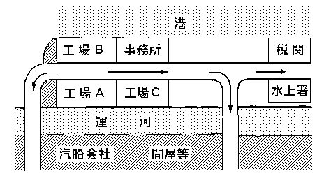

金網の張ってある
昼になる少し前だった。「Ｈ・Ｓ
――あらッ！
「田中絹代」が声をあげた。この工場の癖で、田中絹代と似ているその女工を誰も本名を云うものはなかった。彼女は窓際に走った。コンヴェイヤーの前に立って、罐のテストをしていた男工の眼が、女の後を辿った。――外から窓に男がせり上がっている。その男は細くまるめた紙を、工場の中に入れようとしているらしい。
女が走ってくるのを認めると、男の顔が急に元気づいたように見えた。彼女は金網の間から紙を受取ると、耳に窓をあてた。
――監督にとられないように、皆に配ってくれ。頼みますよ。
男は窓の下へ音をさして落ちて行った。が、
昼のボーが鳴ると、機械の騒音が順々に吸われるように落ちて行って――急に女工たちの
――何ァによ、絹ちゃん、ラヴ・レター？
――ラヴ・レターの見本か？ 馬鹿に
それを見ていた男工も寄ってきた。
――そんな事すると、伝明さんが泣くとよ。
――そうかい、出目でなけァ駄目とは恐ろしく物好きな女だな？
皆が吹き出した。
田中絹代がビラを皆に一枚々々渡してやった。
――な、何ァんでえ、これはまた特別に色気が無いもんでないか。
――組合のビラよ。
失業労働者大会
・市役所へ押しかけろ！
・我等に仕事を与えよ！
・失業者の生活を市で保証せよ！
・市役所へ押しかけろ！
・我等に仕事を与えよ！
・失業者の生活を市で保証せよ！
――よオッ！
連中を見ると、製罐部の職工が何時もの奴を出した。
――何云ってるんだ。この罐々虫！
負けていなかった。
――鉄ばかり削っているうちに、手前えの身体ば
製罐部と仕上場の職工は、何時でもはじき合っている。片方は熟練工だし、他方は機械についてさえいればいゝ職工だった。そこから来ていた。普段はそれでもよかったが、何かあると、知らないうちに、各々は別々に固まった。――例えば、仕上場の誰かゞ「歓迎」か「観迎」か分らなかったとする。すると、仕上場全部が「一大事」でも起ったように騒ぎ出す。彼等はこんな事でも充分に夢中になった。頭を幾つ並べてみたところで、同じ位の頭では結局どうしても分らず、持てあましてしまう。然し彼等は道路一つ向うの「事務所」へ出掛けて行って、ネクタイをしめた社員にきくことがあっても、製罐部の方へは行かないのだ。
相手の胸にこたえるような冗談口をさがして、投げ合いながら、皆ゾロ／＼階段を食堂へ上って行った。上から椅子の足を床にずらす音や、女工たちのキャッ／＼という声が「塩鱒」の焼ける匂いと一緒に、
この日、Ｙの「合同労働組合」のビラは「Ｈ・Ｓ工場」へ三百枚程入った。職場々々の「
飯が終って、森本が遅く階段を降りてくると、段々のところ／″＼や、工場の隅々に、さっきのビラが無雑作にまるめられたり、鼻紙になったり、何枚も捨てられているのを見た。――彼はありありと顔を
「Ｈ・Ｓ製罐会社」は運河に臨んでいた。――Ｙ港の西寄りは鉄道省の埋立地になって居り、その一帯に運河が
Ｙ市は港町の関係上、海陸連絡の運輸労働者――浜人足、仲仕が圧倒的に多かった。朝鮮人がその三割をしめている。それで「労働者」と云えば、Ｙではそれ等を指していた。彼等はその殆んどが半自由労働者なので、どれも
森本は仕事台に寄っても仕事に
職場の片隅に取付けてある十馬力の
働いている職工たちは、まるで縛りつけられている機械から一生懸命にもがいているように見えた。腰がふん張って、厚い肩が据えられると、タガネの尻を押している腕先きに全身の力が微妙にこもる。生きた骨にそのまゝ
こゝは製罐部のような
天井を縦断している二条のレールをワイヤー・プレーをギリ／＼と吊したグレーンが、皆の働いている頭のすぐ上を
――頼むどオ！ 南部センベイは安いんだ！
身体を
――まず緊縮！ 文句云うな。手前一人片付けば、サバ／＼するァ！
ハンドルを握っていた職工が上で
――畜生々々！
下のは大ゲサに横へ
――上から見れア、どいつもこいつも薄汚くゴミ／＼してやがる。
――少し高いところさ上ったと思って、可哀相に畜生、すぐブル根性を出しやがる。
――ヘン、だ。手前らを
横ボール盤の側に、四五人の職工とパンパン帽をかぶった職長が集って、ワイヤー・プレーを
――オーライ！
渡り職工の職長が手を挙げた。手先きを見ていたハンドルの職工がグイと手元にひいた。グレーンがとまると、ワイヤー・プレーは余勢でゆるく揺れた。その度にチエンが、ギーイ、ギーイときしんだ。
――レッコ、レッコ！
職長は手先きをお出で／＼をするように動かした。チエンがギクシャクしながら、延びてきた。エンヤ、コラサ、エンヤ、コラサ……皆は掛声をかけ始めた。ワイヤー・プレーは底を二つの滑車にのせ、
――森本のところからは、それが
彼はマシン油で汚れた手を、ナッパの尻にゴシ／＼こすった。「ま、それでもいゝだろう……！」――そして彼はフン、と鼻をならした。
終業のボーが鳴ると、皆は仕事場から一散に洗面所へ
――馬鹿野郎め、石鹸が泣きやがる、オイ鑪でゴシ／＼やってくれ。
――田中絹代さんにふられたいってね。
――オヤ／＼だ、この野郎。
割り込んで来る奴を、両方のが尻と尻をくッつけて邪魔をした。
――何んだ、大きくもない
――へえ、済みませんね、エミちゃんのお尻でなくて。
――抱くにも、抱かれぬッてとこだな。ハハヽヽヽヽヽ。
その後で、皆は
――こん畜生、だまってるとえゝ気になりやがって、
と、云われた奴が石鹸で顔中をモグモグさせながら、
――へえ、
見当ちがいの方を見て、云いかえした。
申訳程の仕切りがあって、女工たちの洗面所がすぐ続いていた。洗面所にしゃがむと、女工たちの腰から下が見えた。職工たちは腰から下だけの「格好」で、誰が誰かを見分けるのに慣れていた。顔を何時までも洗っている振りをして、職工たちはそれを見ていた。
――あの三番目が「モンナミ」の
工場では、Ｙ市の有名なカフエーやバーのめずらしい名前をとってきて、「シャン」な女工を呼んでいる。
――どうだいあの腰の工合は！
――あいつ、この頃めっきり大人になってきたぞ。フン！
――腰がものを云うからな。
――こっちは誰だ？
――おッと、動いたぞ。足を交えた。……いゝなア、畜生！
――オイッ！
後に立っているものが、それを見付けて、いきなり二つ並んでいる頭を両方からゴツンとやった。
――出歯亀！
女の方で何か云いながら、一度にワッ、と笑い出した。すると、こっちでもわざと声をあげた。
洗面所を出ると、出口で両方から一緒になった。帰るとき、女たちはまるッきり別な人になって出てきた。
――お前は誰だっけな？
煙筒や汽罐の
――プッ！ お爺さん、色気なくなったね。
そして女に背中をたゝかれた。
――お婆さんを間違わないでね。
――こん畜生！
会社は、女工が帰りに「お嬢さん」になることにも、カフエーの「
洗面所を出ると、狭い廊下を肩で押し合いながら、二階の「脱衣室」に上って行った。両側が
――この、いけすかない男！
――オイ、今日は……？
――今日？ 約束があるの。
――本当か。何んの約束だ。誰と？
――これでも、ちァんとね。
――こん畜生！
職工はよく仕事をしながら、次の持場にいる女と夜会う約束をするために、コンヴェイヤーに乗って来る罐詰に、
「ハシ、六」
と書いてやる。男は手先きだけ動かしながら、その罐が機械の向うかげにいる女の前を通って行くのを見ている。女はチラッと見つけると、それを消して、そして男に
――「六時、何時もの橋のところ」というのが、その意味だった。そういうのが幾組もある。
森本は顔をしかめた。こういう中から一体自分たちの仕事の仲間になってくれるようなものが、何人出るのだ。それを思うと、胸の下が妙に不安になり、落付けなくなった。
脱衣所の入口に掲示が出ていた。森本は始め「ホオッ！」と思った。皆が服の袖に手を通しながら、その前に立っていた。
告
皆サンモ知ッテイル通リ、本日何者カヾ当工場ニ「失業者大会」ノビラヲ撒イテ行キマシタ。云ウマデモナク最近ノ不況ハドシ／＼失業者ヲ街頭ニ投ゲ出シテ居リ、ソレハ全く見ルニ忍ビナイモノサエアルノデス。然シ我工場ハ幸イニシテ、皆サンノ勤勉努力にヨッテ、ソノ些々タル影響モ受ケテイナイノデアリマス。一度工場外ニ足ヲフミ出シテ見レバ分ル通リ、当工場ハマサニ「Ｙノフォード」タル名ニ恥シクナイ充分ノ待遇ヲ、ソノ時間ノ点カラ云ッテモ、ソノ賃銀ノ上カラ云ッテモ、皆サンニ与エテ居ルノデアリマスカラ、コノ際決シテ、カヽル宣伝ニ附和雷同セザル様、呉々モ申述ベテ置ク次第デアリマス。
右
皆サンモ知ッテイル通リ、本日何者カヾ当工場ニ「失業者大会」ノビラヲ撒イテ行キマシタ。云ウマデモナク最近ノ不況ハドシ／＼失業者ヲ街頭ニ投ゲ出シテ居リ、ソレハ全く見ルニ忍ビナイモノサエアルノデス。然シ我工場ハ幸イニシテ、皆サンノ勤勉努力にヨッテ、ソノ些々タル影響モ受ケテイナイノデアリマス。一度工場外ニ足ヲフミ出シテ見レバ分ル通リ、当工場ハマサニ「Ｙノフォード」タル名ニ恥シクナイ充分ノ待遇ヲ、ソノ時間ノ点カラ云ッテモ、ソノ賃銀ノ上カラ云ッテモ、皆サンニ与エテ居ルノデアリマスカラ、コノ際決シテ、カヽル宣伝ニ附和雷同セザル様、呉々モ申述ベテ置ク次第デアリマス。
右
工場長
――チエッ！ 行きとゞいてやがる！
彼はその言葉が、自分ながら不覚にもかぶとを脱いだ心のゆるみを出しているのにハッとした。彼は油っぽい形のくずれた鳥打ちを無雑作にかぶった。
工場の前の狭い通りを、その幅を一杯にみたして、職工や女工が同じ方向へ流れていた。彼はその中に入りながら、
運河の鉄橋を渡ると、税関や波止場、水上署、汽船会社、倉庫続きの浜通りだった。――浜人夫がタオ／＼としわむ「
その「あぶれた」人足たちは「Ｈ・Ｓ工場」の職工達が鉄橋を渡ってくるのを見ていた。ありありと羨望の色が彼等の顔をゆがめていた。「Ｈ・Ｓ」の職工たちは「俺らはお前たちの仲間とは
浜人足――この運輸労働者達は「親方制度」とか「現場制度」とか、色々な小分立や封建的な苛酷な
森本はその浜の労働者のうちに知った顔を幾つか見付けた。組合で顔を合せたことのある人達だった。然し彼は今、この職工たちの中にいては、その人達に言葉をかける「図々しさ」を失っていた。
父は帰っていなかった。――六十を越している父は、彼より朝一時間早く出て行って、二時間遅く帰ってくる。陸仲仕の「山三現場」に出ていた。耳が遠くなり、もう眼に「ガス」がかゝっていた。電話の用もきかず、きまった仕事の半分も出来ないので、親方から毎日露骨にイヤな顔をされていた。然し二十年以上も勤務している手前、親方も一寸どう手をつけていゝか困りきっているらしかった。
――つらいなア……！
フッとそれが出る。朝やっぱり
――仕事より親方の顔ば見てれば、とッても……なア！
まだ暗い出掛けに上り端で、仕事着の父親がゴリ／＼ッと音をさして腰をのばす。それを聞く度に彼は居たまらない苦痛を感じた。――然し彼は、何時かこの父親をもっと、もっと惨めにしてしまわなければならない事を、フト考えた。――
家の中は一日中の暑気で湿ッ気と小便臭い匂いがこもり、ムレた畳の皮がブワ／＼ふくれ上っていた、汗ばんだ足裏に、それがベタ／＼とねばった。
猿又一つになって机の前に坐ると、手紙が来ていた。「中野英一」というのが差出人だった。それは工場の女工だった。その女を森本はようやく見付けたのだった。そのたった「一つ」をまず足場に、女工のなかにつながりを作って行かなければならなかった。彼は組合の河田からその方針について、指令をうけていた。手紙は簡単に「トニカク、クワシイ事ヲオ話シマショウ。明日八時、石切山ノ下デマッテイマス。」――書くなと云った通り、自分の名前も、
夏の遅い日暮がくると、
――腹減らしの
父が帰ってきた。父は入口でノドをゴロ、ゴロならした。
――どうだった、
――ン？
彼は父が何時でも「労働者大会」とか「労働組合」とか、そんなものに反対なのを知っている。父はそれだから二十何年も勤めて来られたのかもしれない。そして今毛一本程の
――事務所の前で気勢ば上げていたケ。あぶれた奴等ば集めてナ。
――組合のものだべ、あれア！
父は新聞の話でもするような無関心さで云った。
――
父は返事をしないで、薄暗い土間にゴソ、ゴソ音をさせた。少しでも暗いと、「ガス」のかゝった眼は、まるッきり父をどまつかせた。父は裏へまわって行った。便所のすぐ横に、父は無器用な棚をこしらえて、それに花鉢を三つ程ならべていた。その辺は便所の匂いで、プン／＼していた。父は家を出ると、キット夜店から値切った安い
――この道楽爺！ 飯もロク／＼食えねえ時に！
母はその度に怒鳴った。その外のことでは、ひどい
――今日の暑気で、どれもグンナリだ。
裏で
「Ｈ・Ｓ工場」にも、少し年輩の職工は小鳥を飼ってみたり、花鉢を色々集めてみたり、
――花のような
工場に置かれた花は、マシン油の匂いと鉄屑とほこりと轟々たる音響で身もだえした。そして、其処では一週間ももたないことが発見された。
――へえ！
皆は眼をまるくした。
――で、人間様はどういう事になるんだ？
居合わせた森本がフト冗談口をすべらした。――すべらしてしまってから、自分の云った大きな意味に気付いた。
――夜店で別な奴と取りかえてくるさ。労働者はネ、
新聞社の印刷工などに知り合いを持っているアナアキストの職工だった。――
父が裏口から何か云っている。声が聞えず、動く口だけが汚れた
――お前、十五銭ばかし持ってないかな。
具合悪そうに、そう云っているのだ。
彼は又かと思った。「うん」と云うと、父は子供のような喜びをそのまゝ顔に出した。
――えゝ鉢があってナ、
暗くなるのを待った。その「会合」は秘密にされなければならなかった。
――活動へ行ってくるよ。
家へはそう云った。昼のほとぼりで家の中にいたまらない長屋の人達は、夕飯が済むと、家を
この一帯はＹ市の
森本は暗いところを選んで歩いた。角を曲がる時だけ立ち止った。場所はワザと賑かな、明るい通りに面した家にされていた。裏がそこの入口だった。彼は決められていたように、二度その家の前を往復してみて、裏口へまわった。戸を開けると、鼻ッ先きに勾配の急な階段がせまった。彼は爪先きで
――誰？
上から光の幅と一緒に、河田の声が落ちてきた。
――森。
――あ、ご苦労。
室一杯煙草の煙がこめて、
――よオッ！
石川はもと「Ｒ鋳物工場」にいたことがあるので、前からよく知っていた。彼が河田を知ったのも、石川の紹介からだった。石川が組合に入るようになってから、森本はそういう方面の教育を色々彼から受けた。それまでの彼は、普通の職工と同じように、安淫売をひやかしたり、活動をのぞいたり、買喰いをしたり喧嘩をして歩いていた。それから青年団の演説もキッパリやめてしまった。
もう一人の鈴木とは前に一寸しか会っていなかった。神経質らしい、一番鋭い顔をしていた。何時でも不機嫌らしく口数が少なかったので、森本にはまだ親しみが出ていなかった。彼は膝を抱えて、
――暇な人間も多いんだな。
――鈴木君、顔を出すと危いど。
河田が謄写版刷りの番号を
――顔を出すと危いか。ハヽヽヽ、汽車に乗ったようだな。
――じァ、やっちまうか……。
灰皿を取り囲んで四人が坐った。
――森本君とはまだ二度しか会っていないから、或いは僕等の態度がよく分っていないかと思うんだ……。
河田は眉をひそめながらバットをせわしく吸った。
――手ッ取り早く云うと、こうだと思うんだが……。これまでの日本の左翼の運動は可なり活発だったと云える。殊に日本は資本主義の発展がどの分野でゝも遅れていた。それが戦争だとか、其他色ンナ関係から急激に――外国が十年もかゝったところを、五年位に距離を縮めて発展してきた。プロレタリアも矢張り急激に
河田が「臼」を
――ま、詳しいことは又色んな時にゆっくりやれるとして。とにかく今になって云うのも変だが、「三・一五事件」で、何故僕らがあの位もの要らない犠牲を払ったか、ということだ。それは、さっき云ったあの華々しい運動をやっていた先輩たちが、非合法運動なのに、今迄の癖がとれず、時々金魚のように水面へ身体をプク／＼浮かばしていたところから来てるんだ。工場に根をもった、沈んだ仕事をしていなかったからだ。――実際、僕たちの仕事が、工場の中へ、中へと沈んで行って、見えなくなってしまわなければならなかったのに、それを演壇の上にかけのぼって、諸君は！ とがなってみたり、ビラを持って街を走り廻わることだと、勘ちがいをしてしまったのだ。――日本の運動もこゝまで分ってきた…………。
――ところが、本当は仲々分らないんだよ。恐ろしいもんだ。
石川が河田の言葉をとった。銀紙のコップをバットの空箱に立てながら、何時ものハッキリしない笑顔を人なつッこく森本に向けた。
――ボロ船の
――それは本当だ。でねえ、僕らが何故口をひらけば「工場の沈んだ組織」と七くどく云うかと云えば、仮りにＹのような浮かんだ労働組合を千回作ったとしても、「三・一五」が同様に千回あれば、千回ともペチャンコなのだ。それじゃ革命にも、暴動にも同じく一たまりもないワケだ。話が大きいか。ところが、こうなのだ。最近戦争の危機がせまっていると見えて、官営の軍器工場では、この不況にも
――僕らはそれをやって行こうと思っているんだ。そのために……。
――俺も
石川が云った。
――職場ば離れるんでなかった。な、河田君！
――然しあの頃と云ったら、組合へ必ず出てきて、謄写版を刷って、ビラをまくことしか「運動」と云わなかったもんだ。
――そうなんだ。正直に云って、工場にじっとしていることが、良心的にたまらなかったんだ、あの頃は。
森本は初めて口を入れた。
――然し工場は動きづらいと思うんです。大工場になると「監獄部屋」のようなことはしないんですから……。
彼は今日の工場の様子を詳しく話した。河田たちは一つ、一つ注意深くきいていた。
――それはそうだ。
と河田が言った。
――だから今迄何時も工場が後廻わしになってきたのだ。
森本は河田に云われて、「Ｈ・Ｓ工場」の地図を書いた。河田はその他に、市内の色々な工場の地図を持っていた。それからＹ市の全図を拡げて「Ｈ・Ｓ」のところに赤い印をつけた。
――水上署とは余程離れてるだろうか。
――四……四町位でしょう。
――四町ね？
――悪いところに立ってるな。
石川が顔をあげた。
――この

森本は工場について一通り説明した。――工場Ａが製罐部で、罐胴をつくるボデイ・ラインと罐蓋をつくるトップ・ラインに分れている。ボデイの方は、ブリキを切断して、円く胴をつくり、
――その外の附属は？
河田がきいた。
――実験室。これはラバー（ゴム引き）の試験と漆塗料の研究をやっています。こゝにいる人は私らにひどく理解を持ってゝくれるんです。どッかの大学を首になったッて話です。
――自由主義者ッてところだろう。
――それから製図室と云って、産業の合理化だかを研究しているところがあります。
――ホ、産業の合理化？
河田が調子の変った響きをあげた。
――「Ｈ・Ｓ工場」が始めて完全なコンヴェイヤー組織にかえられたのも、こゝの部員があずかって力があったそうです。――その時は一度に人が随分要らなくなったので、とう／＼ストライキになって、職工たちが夜中に工場へ押しかけて行って、守衛をブン
――ん。
――今工場ではブリキ板を運ぶのに、トロッコを使っていますが、あれも若しコンヴェイヤー装置にでもしてしまうような事があったら、そこでも
――なるだろう。なるね。
――なるんです。製図室や実験室の人達には懸賞金がかけられているんです。
――うまいもんだ。
――その人達は何時でも、アメリカから取り寄せて、モーターやボイラーの写真の入った雑誌を読んでいます。
――これから色々僕たちの仕事を進めていく上に、職工のことゝは又別に、会社の
森本はうなずいた。
――工場のことでも、私らの知っていることは、ホンのちょッぴりよりありません。
――そうだと思うんだ。……それでと……。
眼が腕時計の上をチラッとすべった。
――そうだな……。
疲れたらしく、石川が口の中だけで、小さくあくびを
――ン、それから工場の中の対立関係と云うかな……あるだろうね。
――え……職場々々で矢張りあります。仕上場の方は熟練工だし、製罐部の方はどっちかと云えば、女工でも出来る仕事です。それで…………。
森本がそう云って、頭に手をやった。河田は彼のはにかんだ笑い顔を初めてみたと思った。角ばった、ごッつい顔だと思っていたのに、笑うと
――私らなど、何んかすると……金属工なんだぜ、と……その方の大将なんです。それから日雇や荷役方は職工と一寸変です。事務所の社員に対しては、これは
森本は声を出して笑って、
――男の方だって、さアーとした服を着ている社員様をみるとね。ところが、会社には勤勉な職工を社員にするという規定があるんです。会社はそれを又実にうまく使っているようです。ずウッと前に一人か二人を思い切って社員にしたことがあります。然しそれはそれッ切りで、それからは仲々したことが無いんですが、そういうのが変にきいてるらしいんです。
河田は誰よりも聞いていた。鈴木は然し最後まで一言もしゃべらなかった。
森本は更に河田から次の会合までの調査事項を受取った。「工場調査票」一号、二号。
河田はこうしてＹ市内の「重要工場」を充分に細密に調査していた。それ等の工場の中に組織を作り、その工場の代表者達で、一つの「組織」と「連絡」の機関を作るためだった。「工場代表者会議」がそれだった。――河田はその大きな意図を持って、仕事をやっていたのだ。ある一つの工場だけに問題が起ったとしても、それはその機関を通じて、直ちにそして同時に、Ｙ市全体の工場の問題にすることが出来るのだ。この仕事を地下に沈ませて、強固にジリ／＼と進めていく！ それこそ、どんな「弾圧」にも耐え得るものとなるだろう。この基礎の上に、根ゆるぎのしない産業別の労働組合を建てることが出来る。――河田は眼を輝かして、そのことを云った。
――ブルジョワさえこれと同じことを
暗い階段を両方の手すりに身体を浮かして、降りてくると、河田も降りてきた。
――君は大切な人間なんだ。絶対に警察に顔を知られてはならないんだからね。
森本は頬に河田の息吹きを感じた。
――「工場細胞」として働いてもらおうと思ってるんだ。
彼の右手は階段の下の、厚く澱んだ闇の中でしっかりと握りしめられていた。
彼は外へ出た。気をとられていた。小路のドブ板を拾いながら、足は何度も
――工場細胞！
彼はそれを繰り返えした。繰りかえしているうちに、ジリ／＼と底から興奮してくる自分を感じた。
この会合は来るときも、帰るときも必ず連れ立たないことにされていた。森本も鈴木も別々に帰った。
……俺へばりついても、この仕事だけはやって行こうと思ってる。命が的になるかも知れないが……。
前に帰ったものとの間隔を置くために待っていた河田が厚い肩をゆすぶった。
――警察ではこう云ってるそうだ。俺とか君とか鈴木とか、
――フうん、やるもんだな。
――合法活動ならイザ知らず、運動が沈んでくれば、そんなスパイの踏みこめるところなど知れたものだ。恐ろしいのは仲間がスパイの時だ。或いは途中でスパイにされたときだ。買収だな。早い話が……。
――オイ／＼頼むぜ。
石川がムキな声を出した。
――ハヽヽヽヽ。まアさ、君がこっそり貰ってるとすれば、今晩のことはそのまゝ筒抜けだ。特高係など、私が労働運動者ですと、フレて歩く合法主義者と同じで、恐ろしさには限度があるんだ。外部でなくて内部だよ。
――また気味の悪いことを云いやがるな。
河田はだが屈託なさそうに、鉢の大きい頭をゴシ／＼
――本当だぜ！
と云った。そして腕時計を見た。
――今日は俺が先きに帰るからな。
河田はそこから出ると、萬百貨店の前のアスファルトを、片手にハンカチを持って歩いていた。一寸蹲めば分る小間物屋の時計が八時を指していた。彼は其処を二度往き来した。敷島をふかしてくる男と会うためだった。彼が前にその男から受取った手紙の日附から丁度十日目の午後八時だった。それは約束された時間だった。彼は表の方を注意しながら、三銭切手を一枚買った。会ったときの合図にそれが必要だった。その店を出しなに、フト前から来る背広の人が敷島をふかしているのに気付いた。彼はその服装を見た。一寸
男が寄ってきた。で彼も何気ない様子を装って、その男と同じ方へ歩き出した。彼から口を切った。
――山田です。
すると、背広の男は直ぐ
――川村。
と云った。
「山」と「川」が合った。二人は人通りのあまり多くない河
――何処か休む処がないですか。
と云った。
――そうですね。
河田は両側を探して歩いた。そして小さいレストランの二階へ上った。
テーブルに坐ると、男がポケットから三銭切手を出した。その 3sn の 3 がインクで消されていた。河田もさっきの三銭切手を出して、その sn の方を消した。二人は完全に「同志」であることが分った。――男は中央から派遣されてきた党のオルガナイザーだった。
河田はＹ地方の情勢や党員獲得数などを、そこで話し出した。
鈴木は少しでも長く河田や石川などゝいることに苦痛を覚えた。彼は心が少しも楽しまないのだ。誇張なしに、彼は自分があらゆるものから隔てられている事を感じていた。そしてその感情に何時でも負かされていた。――およそ、プロレタリヤ的でない！ 然し自分は一体「運動」を通じて、運動をしているのか、「人」を信じて運動をしているのか？ 河田や石川が自分にとって、どうであろうと、それが自分の運動に対する「気持」を一体どうにも変えようが無い筈ではないか。――又変えてはならないのだ。そうだ、それは分る。然し直ぐ次にくるこの「淋しさ」は何んだろう？ ――彼はもう自分が道を踏み迷っていることを知っていた。
理論的にも、実践的にも、それに個人的な感情の上からでも、あせっている自分の肩先きを、グイ／＼と乗り越してゆく仲間を見ることに、彼は拷問にたえる以上の苦痛を感じた。こういう迷いの一ッ切れも感じたことのないらしい他の同志を、彼はうらやましく思った。――然し彼はこういう無産運動が、外から見る程の華々しい純情的なものでもなく、醜いいがみ合いと小商人たちより劣る掛引に充ちていることを知った。それは彼に恐ろしいまでの失望を強いた。
――運動ではお前は河田達の先輩なんだぜ。
その言葉の陰は「それでも
――お前も案外鈍感だな。一緒に働いていて、河田や石川たちから何処ッかこう仲間外れにされていることが分らないのかな。
彼はだまって外ッ方を向いた。――然し彼は自分の意志に反して、顔から血のひいてゆくのをハッキリ感じた。
――「手」だな、とお前はキット考えてるだろう。
特高主任が其処で薄く笑った。
――それアねえ、僕らも正直に云って、そんな「手」をよく使うよ。だが、これが「手」かどうかは、僕より君が内心知ってるんだろうと思うんだ。この前、石本君とも話したが、鈴木は可哀相に置いてけぼりばかり食ってる。あれでよく運動を一緒にやって行く度量がある。俺たちにはとても出来ない芸当だって云ってたんだ。
――…………。
――……じゃ知らせようか。
特高主任がフト顔をかしげた。鈴木はその言葉の切れ間に思わず身体のしまる恐怖を感じた。
――これは或いは滅多に云えない事だが、僕等はある方法によって、そこは世界一を誇る警察網の力だが、すでに河田たちが共産党に加入しているということの確証を握ったのだ。――ところが、それに君が入っていないのだ。……入っていないから、こんな事君に云える。
――…………。
――おかしい云い方をするが、僕はそのことが分った時、喜んでいゝか、悲しんでいゝか分らなかった。
――入っていないときいて、僕等が喜ぶのは勝手だと君は云いたいだろう。それならそれでいい。僕等はどうせ、人に決して喜ばれることの出来ない職業をしているのだから。然し「同志」というものゝ気持は、僕等からはとても
――勝手なことを云え！
胸がまくれ上がって、のどへ来た。それを一思いにハキ出さなければならなかった。で、怒鳴った。――彼は胸一杯の涙をこらえた。
特高主任は鉛筆をもてあそびながら、彼の顔をじッと見た。一寸だまった。
――そればかりではないんだ。紛議の交渉とか争議費用として受取った金の分配などで、君がどの位誤魔化されているか知れない。――河田たちが、そんな金で遊んでいる証拠がちァんと入ってるんだ。――それでも清貧に甘んじるか……。
それ等が嘘であれ、本当であれ、彼が内心疑っていた事実をピシ／＼と指していた。
気にしまい、気にしまい、そう意識すると、逆にその意識が彼の心を歪める。河田と素直な気持ではものが云えなくなった。河田たちの顔を見ていることが出来なかった。自分ながら
少し前だった。何時も自分の宿に訪ねてくる特高係が、街で彼を見ると寄ってきた。
――君は大分宿代を
と、ニヤ／＼云った。
――じゃ、君か！
彼はそのまゝ立ち止った。刑事は大きな声で笑った。――四五日前、鈴木の友人だと云って、彼の泊っている宿へ来て、今迄滞らせていた宿代を払って行ったものがあったのだ。
――いゝじゃないか、こういう事は。お互さ。別に恩をきせて、どうというわけでないんだから。
それから、一寸聞きたいことがあるんだが、と赤い薄い
二人は大通りから入ったカフエー・モンナミを見付けた。そこのバネ付のドアーを押して二階へ上った。――特高は彼には勝手に、ビールやビフテキを注文した。
――断っておくが、こういう事は君たちの勝手にすることで、別に……。
みんな云わせずに、
――分ってるよ。固くならないでさ。一度位はまアゆっくり話もしてみたいんだよ。――いくら僕等でもネ。
と、云って、ヒヽヽヽヽと笑った。
彼はもう破れ、かぶれだと思った。彼はそこでのめる程酔払ってしまった。――
「二階」の会合の時も、河田が急いでいたらしかったが、鈴木は自分から先きに出てしまった。ジリ／＼と来る気持の圧迫に我慢が出来なかったのだ。――下宿に帰ってくると、誰か本の包みを置いて行ったと云った。彼はそれを聞くと、その意味が分った。
二階に上って行って解いてみると、知らない講談本だった。彼は本の背をつまんで、頁を振ってみた。ぺったり折り畳まった拾円紙幣が二枚、赤茶けた畳の上に落ちてきた。
彼はフイに顔色をかえた。――拾円紙幣が出たからではない。知らずに本の頁を振る動作をしていた自分にギョッと気付いたからだった。
彼はそれをつかむと、階段を下りて、街へ出て行った。だが、彼の顔色がなかった。
――君ちァん、君ちァん。――キイ公オ！
二階の
――キイ公、じらすなよ！
お君はもう一度クッと笑って、倉庫の中へ身体を跳ねらした。
――ア、暗い。
ワザと上わずった声を出して、両手で眼を覆った。居ない、居ないをしているように。
――こっちだ。
男の手が肩にかゝった。
――いや。
女が身体をひいた。
――何が「いや」だって。手ば
――…………。
お君は男の胸を
――手ば取れッたら。な。さ。ん？
女はもっとそうしていることに妙な興奮と興味を覚えた。男は無理に両手を除けさせて、後に廻わした片手で、女の身体をグイとしめつけてしまった。女は男の腕の中に、身体をくねらした。そして、顔を仰向けにしたまゝ、いたずらに、ワザと男の唇を色々にさけた。男は女の頬や額に唇を打つけた。
――駄目だ、人が来るど！
男はあせって、のどにからんだ声を出した。お君はとう／＼声を出して笑い出した。そして背のびをするように、男の肩に手をかけた……。
――上手だなア。
男が云った。
――モチ！ 癖になるから、あんたとはこれでお
男が自由にグイ／＼引きずり廻わされるのが可笑しかった。お君はそう云うと、身体を
お君は昼過ぎになってから、然し急に
昼飯時の食堂は何時ものように、女工たちがガヤ／＼と自分の場所を仲間たちできめていた。お君は仲良しの女工に呼ばれて、そこで腰を並べて、昼食をたべた。
――ねえ！
ワザ／＼お君を呼んだ話好きな友達が、声をひそめた。
――驚いッちまった！
女は昨日仕事の跡片付けで、皆より遅くなり、工場の中が薄暗くなりかけた頃、脱衣場から下りてきた。その降り口が丁度「ラバー小屋」になっていた。知らずに降りてきた友達はフトそこで足をとめた。小屋の中に誰かいると思ったからだった。女の足をとめた所から少し斜め下の、高くハメ込んである小さい硝子窓の中に――男と女の薄い影が動いている。
――それがねエ！
女は口を抑えて、もっと低い声を出した。
男はこっちには背を見せて、ズボンのバンドをしめていた。女は窓の方を向いたまゝうつ向いて、髪に手をやっている。男はバンドを締めてしまうと、後から女の肩に手をかけた。そして片方の手をポケットに入れた。ポケットの中の手が何かを探がしているらしかった。
――お金よ！ 男がそのお金を女の帯の間に入れてやったのよ、どう？
――…………

――で、その女の人一体誰と思う？
いたずらゝしい光を一杯にたゝえた眼で、お君をジッと見た。
――誰だか分ったの？
――それアもう！ そういうことはねえ。
――…………？
――芳ちゃんさ！
――馬鹿な！
お君は反射的にハネかえした。
――フン、それならそれでいゝさ。
女は肩をしゃくった。
お君は一寸だまった。
――相手は？
――相手？ お金商売だもの一日変りだろうよ。誰だっていゝでしょうさ。
何時でも寒そうな唇の色をしている芳ちゃんは、そう云えば四人の一家を一人で支えていた。お君はそのことを思い出した。――それをこんな調子でものを云う女に、お君はもち前の向かッ腹を立てゝしまった。
――でも、
お君は飯が終って立ちかけながら、上から浴びせかけた。そして先きに食堂を出てしまった。
――馬鹿にしてる！
午後から女学生の「工場参観」があると云うので、男工たちは燥ゃいでいた。
――ヘンだ。ナッパ服と女学生様か！ よくお似合いますこと！
女工たちは露骨な反感を見せた。
――口惜しいだろう！ ――女学生が入ってくると、
――眼付きなら、どっちがね！
――オイ、あまりいじめるなよ。たまには大学生様だって参観に来るんだからな。
何時でもズケ／＼と皮肉なことを云う職工だった。
――と、どうなるんだ。大学生様と女工さんか。ハ、それア今
――ネフリュウドフでも来るのを待ってるか……！
「芸術職工」が口を入れた。
――女学生の参観のあとは、不思議にお嬢さん方の鼻息がおとなしくなるから、たまにはあった方がいゝんだ。
年老った職工が聞いていられないという風に云った。
――「友食い」はやめろって！ キイ公まで黙ってしまった。――何んとか、かんとか云ったって……どんづまりはなア！
どんづまりは？ で、みんなお互気まずく笑い出してしまった。
「Ｙのフォード」は、その完備した何処へ出しても恥かしくない工場であると云うことを宣伝するために、広告料の要らない広告として、「工場参観」を歓迎していた。「製罐業」を可成りの程度に独占している「Ｈ・Ｓ会社」としては、工場の設備や職工の待遇をこの位のものにしたとしても、別に少しの負担にならなかった。
伝令が来た。幼年工を使ってよこした。
――来たよ。シャンがいるよ。
――キイ公、聞いたか。シャンがいるとよ。
――どれ、俺も敵状視察と行ってくるかな。
同じパッキングにいる
――ね、君ちゃん、私いやだわ。女学校なら、小学校のとき一緒の人がいるんだもの。
――構うもんかい！
お君は男のような云い方をした。
――こっちへ来たら、その間だけ便所へ行ってるわ、頼んで。――本当に、どんな気で他人の働いてるのを見に来るんだか。
――何が恥かしいッて。お嬢さん面へ空罐でも
――よオ！ よオ！
――何がよオだい。働いた金でのお嬢さん面なら、文句は云わない。何んだい！
――へえ、キイ公も偉くなったな。どうだい、今晩活動をおごるぞ。行かないか。月形竜之介演ずるところの、何んだけ、斬人斬馬の剣か。人触るれば人を斬り、馬触るれば馬を斬る！ 来いッ、参るぞオ――だ。行かないか。
――たまには、このお君さんにも約束があるんでね。
――キイ公めっきり切れるようになったな。
お君は今晩「仕事」のことで、森本と会わなければならなかった。――
階段を上ってくる沢山の足音がした。
――さア、来たぞ

その昼、森本は笠原を誘って、会社横の
そこからは、事務所の前で、ワイシャツの社員がキャッチボールをやっているのが見えた。力一杯なげたボールがミットに入るたびに、真昼のもの憂い空気に、何かゞ筒抜けていくような心よい響きをたてた。側に立っていた女事務員が、受け損じると、手を
が、工場の日陰の方には、子供が負ぶってきた乳飲子を立膝の上にのせて、年増の女工が胸をはだけていた。それが四五組あった。
森本は青い空をみていた。仰向けになると、空は殊更に青かった。――その時、胸にゲブゲブッと来た。森本は口の中でそれを
――オイ！
側にいた笠原が頭だけをムックリ挙げて、森本を見た。
――……？
彼は極り悪げにニヤ／＼した。
森本が会社のことを色々きくのは笠原からだった。
会社は今「産業の合理化」について、非常に綿密な調べ方をしていた。然し合理化の政策それ自体には大した問題があるのではなくて、その政策をどのような方法で実行に移すかということ――つまり職工たちに分らないように、憤激を買わないようにするには、どうすればいゝか、その事で頭を使っていた。
「Ｈ・Ｓ」では、新たに採用する職工は必ず現に勤務している職工の親や兄弟か……でなければならなかった。専務は工場の一大家族主義化を考えていた。――然しその本当の意味は、どの職工もお互いが勝手なことが出来ないように、眼に見えない「責任上の
会社は更に市内に溢れている失業労働者やすぐ眼の前で動物線以下の労働を強いられている半自由労働者――浜人足たちのことを、たゞそれッ切りのことゝして見てはいなかった。そういう問題が深刻になって来れば来るほど、それが又「Ｙのフォード」である「Ｈ・Ｓ」の職工たちにもデリケートな反映を示してくるということを考えていた。――そういう一方の「劣悪な条件」を必要な時に、必要な程度にチク／＼と暗示をきかして、職工たちに強いことが云えないようにする。――「Ｈ・Ｓ」はだから、イザと云えば、そういう強味を持っていた。
合理化の一つの条件として、例えば労働時間の延長を断行しようとする場合、それが職工たちの反感を
自慢じゃ御座んせぬ
製罐工場の女工さんは
露領カムチャツカの寒空に
命もとでの罐詰仕事
無くちゃならない罐つくる。
羨ましいぞえ
製罐工場の女工さんは
一度港出て罐詰になって
帰りゃ国を富まして身を肥やす
無くちゃならない罐つくる。
自慢じゃ御座んせぬ
製罐工場の女工さんは
怠けられようか会社のために
油断出来ようかみ国のために
命もとでの仕事に済まぬ。
製罐工場の女工さんは
露領カムチャツカの寒空に
命もとでの罐詰仕事
無くちゃならない罐つくる。
羨ましいぞえ
製罐工場の女工さんは
一度港出て罐詰になって
帰りゃ国を富まして身を肥やす
無くちゃならない罐つくる。
自慢じゃ御座んせぬ
製罐工場の女工さんは
怠けられようか会社のために
油断出来ようかみ国のために
命もとでの仕事に済まぬ。
（「Ｈ・Ｓ会社」発行「キャン・クラブ」所載。）
そういう歌や文章が投稿されてくると、会社は殊更に「キャン・クラブ」で優遇した。又、会社がこっそり誰かに作らせて、それを載せることさえした。
「Ｈ・Ｓ会社」はカムサツカに五千八百万罐、蟹工船に七百八十万罐、千島、北海道、樺太に九百八十万罐移出していた。
笠原は工場長のもとで「
「Ｈ・Ｓ工場」の五カ年の統計をとってみると、生産高が増加しているのに、労働者の数は減っている。これは二つの意味を持っていた。――一つは今迄以上に労働者が
然しこれ等のことは、どれもたゞ「能率増進」とか「工場管理法」の徹底とか云ってもいゝ位のことで、「産業の合理化」という大きな掛声のホンの内輪な一部分でしかなかった。――「産業の合理化」は本当の目的を別なところに持っていた。それは「企業の集中化」という言葉で云われている。中や小のゴチャ／＼した商工業を整理して、大きな奴を益々大きくし、その数を益々少なくして行こうというのが、その意図だった。
で、その窮極の目的は、残された収益性に富む大企業をして安々と独占の甘い汁を吸わせるところにあった。そして、その裏にいて、この「産業の合理化」の糸を実際に
例えば銀行が沢山の鉄工業者に多大の貸出しをしている場合、自分の利潤から云っても、それ等のもの相互間に競争のあることは望ましいことではない。だから銀行は企業間の競争を出来るだけ制限し、廃止することを利益であると考える。こういう時、銀行はその必要から、又自分が債権者であるという力から、それ等の同種産業者間に協定と合同を策して、打って一丸とし、本来ならば未だ競争時代にある経済的発展段階を独占的地位に導く作用を営むのだ。――合理化の政策は明かに「大金融資本家」の利益に追随していた。
毎月三田銀行へ提出する「業務報告」を書かせられている笠原は、資本関係としての「銀行と会社」というものが、どんな関係で結びつけられているか知っていた。――「Ｈ・Ｓ工場」の監督権も、支配、統制権もみんな三田銀行が握っていること、営業成績のことで、よく会社へ文句がくること、専務が殆んど三田銀行へ日参していること、誇張して云えば、専務は丁度逆に三田銀行から「Ｈ・Ｓ」へ来ている出張員のようなものであること……。こういう関係は、いずれ面白いことになりそうだ……笠原がそんなことを話した。森本はだん／＼青空を見ていなかった。
産業の合理化は更に購買と販売の方にもあらわれた。資本家同志で「共同購入」や「共同販売」の組合を作って、原料価格と販売価格の「統制」をする。そうすれば、彼等は一方では労働者を犠牲にして剰余価値をグッと
――要らなくなったゴミ／＼した工場は閉鎖される。労働者はドシ／＼街頭におッぽり出される。幸いに首のつながっている労働者は、ます／＼科学的に、少しの無駄もなく
笠原は眼をまぶしく細めて、森本を見た。
――「Ｙのフォード」も何時迄も「フォード」で居られなくなるんでないか、と思うがな。
始業のボウで、二人が跳ね上った。笠原はズボンをバタ／＼と払って、事務所の方へ走って行った。
――失敬ッ！
――ひょっとこ
佐伯？ 何んのために、こっちへやって来やがったんだ、――森本は臭い奴だと思った。
――何んだ、手前の眼カスベか
――何云ってるんだ。窓の外でも見ろ！
佐伯はチラッとそれを見ると、イヤな顔をした。
――あの格好を見れ。「昭和の花咲爺」でないか。ゴルフってあんな恰好しないと出来ないんか。
――フン、どうかな……。
あやふやな受け方をした。佐伯には痛いところだった。
――実はね、安部磯雄が今度遊説に来るんだよ。……それを機会に、市内の講演が終ってから、一時間ほど工場でもやってもらうことにしたいと思ってるんだ。これは専務も賛成なんだが……。
――主催は？ ……君等が呼ぶのか？
――冗談じゃない、専務だよ。
――専務が
森本が薄く笑った。
――へえ、馬鹿に大胆なことをするもんだな。
――偉いもんだよ。
佐伯は森本の意味が分らず、き真面目に云った。
専務が「社民党」から市会議員に出るという噂を森本がきいたことがあった。そんな話を持ち出してきたのも矢張り佐伯だった。その時、森本は、
――じゃ、社民党ッて誰の党なんだ。「労働者の党」ではないのか。
と云った。
佐伯が顔色を動かした。そして
――共産党ではないさ。
と云ったことがある。
会社では、職工たちが左翼の労働組合に走ることを避けるために、内々佐伯たちを援助して、工場の中で少し危険と見られている職工を「労働総同盟」に加入させることをしていた。それは森本たちも知っている。――然しその策略は逆に「Ｈ・Ｓ」の専務は実に自由主義的だとか、職工に理解があって、労働組合にワザ／＼加入さえさせているとか――そういうことで巧妙に隠されていた。それで働いている多くの職工たちは、その関係を誰も知っていなかった。工場の重だった分子が、仮りに「社民系」で固められたとすれば、およそ「工場」の中で、労働者にどんな不利な、酷な事が起ろうと、それはそのまゝ通ってしまう。分りきったことだった。――森本は其処に大きな底意を感ずることが出来る。会社がダン／＼職工たちに対して、積極的な態度をもってやってきている。それに対する何かの用意ではないか？ ――彼はます／＼その重大なことが近付いていることを感じた。
彼はまだ「工場細胞」というものゝ任務を、それと具体的には知っていない。然し彼は今までの長い工場生活の経験と、この頃のようやく分りかけてきたその色々な
――で、この機会に、工場の中にも社民党の基礎を作ろうと思うんだ。……仕上場の方にも一通りは云ってきた。――その積りで頼むぜ。
佐伯はそれだけを云うと、トロッコ道を走って行った。走って行きながら、ブリキを積んだトロッコを押している女工の尻に後から手をやった。それがこっちから見えた。女がキャッ！ とはね上って、佐伯の背を
――ぺ、ぺ、ぺ！
彼はおどけた恰好に腰を振って、曲がって行った。
佐伯は労働者街のＴ町で、「中心会」という青年団式の会を作っていた。その七分までが「Ｈ・Ｓ」の職工だった。彼は柔道が出来るので、その会は半分その目的を持っていた。道場もあった。「Ｈ・Ｓ会社」から幾分補助を貰っているらしかった。何処かにストライキが起ると、「一般市民の利益のために」争議の邪魔をした。精神修養、心神錬磨の名をかりて、明かにストライキ破りの「暴力団」を養成していたのだ。会社で「武道大会」があると、その仲間が中心になった。
森本は職場へ下りて行きながら、自分の仕事の段取と目標が眼の前に、ハッキリしてくるのを感じた。
その日家へ帰ってくると、河田の持って来た新聞包みのパンフレットが机にのっていた。歯車の
・「工場新聞」
・「工場細胞の任務とその活動」
表紙に鉛筆で「すぐ読むこと」と、河田の手で走り書してあった。・「工場細胞の任務とその活動」
――女が入るようになると、気をつけなければならないな。運動を変にしてしまうことがあるから。
河田がよく云った。――で、森本もお君と会うとき、その覚悟をしっかり握っていた。
「石切山」に待ってゝもらって、それから歩きながら話した。
胸を張った、そり身のお君は男のような歩き方をした。工場で忙がしい仕事を一日中立って働いている女工たちは、日本の「女らしい」歩き方を忘れてしまっていた。――もう少し合理的に働かせると、日本の女で洋服の一番似合うのは女工かも知れない、アナアキストの武林が、武林らしいことを云っていた。
工場では森本は女工にフザケたり、笑談口も自由にきけた。然し、こう二人になると、彼は仕事のことでも仲々云えなかった。一寸云うと、まずく
――森本さん温しいのね。
とお君が云った。
――あ、汗が出るよ。
――男ッてそんなものだろうか。どうかねえ……？
薄い
――のどが乾いた。冷たいラムネでも飲みたい。何処かで休んで、話しない？
少し行くと、
――おじさん、冷たいラムネ。あんたは？
――氷水にする。
――そ。おじさん、それから氷水一ツ。
森本を引きずッて、テキパキとものをきめて行くらしい女だと分ると、彼はそれは充分喜んでいゝと思った。彼はこれからやっていく仕事に、予想していなかった「張り」を覚えた。
――で、ねえ……。
のど仏をゴクッ、ゴクッといわせて、一息にラムネを飲んでしまうと、又女が先を切ってきた。
――途中あんたから色々きいたことね、でも私ちがうと思うの。……会社が自分でウマク宣伝してるだけのことよ。女工さんは矢張り女工さん。一体女工さんの日給いくらだと思ってるの。それだけで直ぐ分ることよ。
お君は友達から聞いた「芳ちゃん」のことを、名前を云わず彼に話してきかせた。
――友達はその女が
森本は驚いて女を見た。正しいことを、しかもこのような鋭さで云う女！ それが女工である！
――女工なんて惨めなものよ。だから、可哀相に、話していることってば、月何千円入る映画女優のこととか、女給や芸者さんのことばかり。
――そうかな。
――それから一銭二銭の日給の
――二人か出てるさ。
――あれ傍聴よ。それも、デクの棒みたいに立ってる発言権なしのね。
――ふウん。
――氷水お代り貰わない？
――ん。
――あんた仕上場で、私たちの倍以上も貰ってるんだから、おごるんでしょう。
お君は明るく笑った。並びのいゝ白い歯がハッキリ見えた。森本はお君の屈託のない自由さから、だんだん肩のコリがとれてくるのを覚えた。お君はよく「――だけのこと」「――という
――会社を離れて、お互いに話してみるとよッく分るの。皆ブツ／＼よ。あんた「フォード」だからッて悲観してるようだけれども、私各係に一人二人の仲間は作れるッて気がしてるの。――女ッて……
お君がクスッと笑った。
――女ッて妙なものよ。一たん方向だけきまって動き出すと、男よりやってしまうものよ。変形ヒステリーかも知れないわね。
――変形ヒステリーはよかった。
森本も笑った。
彼は河田からきいた「方法」を細かくお君に話し出した。するとお君はお君らしくないほどの用心深い、真実な面持で一々それをきいた。
――やりますわ。みんなで励げみ合ってやりましょう！
お君は片方の頬だけを赤くした顔をあげた。
氷水屋を出て少し行くと、鉄道の踏切だった。行手を柵が静かに下りてきた。なまぬるく風を
――へえ、シャンだな。
森本はひやりとした。それに「恋人同志」に見られているのだと思うと、カアッと顔が赤くなった。
――何云ってるんだ。
お君が云いかえした。
彼女は歩きながら、工場のことを話した。……顔が変なために誰にも相手にされず、それに長い間の無味乾燥な仕事のために、中性のようになった年増の女工は小金をためているとか、決して他の女工さんの仲間入りをしないとか、顔の綺麗な女工は給料の上りが早いとか、一人の職工に二人の女工さんが惚れたたゝめに、一人が失恋してしまった、ところが失恋した方の女工さんが、他の誰かと結婚すると、早速「水もしたゝる」ような赤い手柄の
坂になっていて、降りつくすと波止場近くに出た。凉み客が港の灯の見える桟橋近くで、ブラブラしていた。
――林檎、夏蜜柑、
道端の物売りがかすれた声で呼んだ。
――林檎喰べたいな。
独言のように云って、お君が寄って行った。
他の女工と同じように、お君も外へ出ると、買い喰いが好きだった。――お君は歩きながら、
――おいしい！ あんた喰べない？
林檎とこの女が如何にもしっくりしていた。
――そうだな、一つ貰おうか……。
――一つ？ 一つしか買わないんだもの。
女は
――……人が悪いな。
――じゃ、こっち側を
女はもう一度袂で林檎を
彼はてれてしまった。
――じゃ、こっち？
女は悪戯らしく、自分の噛った方をくるりと向けた。
――……。
――元気がないでしょう。じゃ、矢張りこっちを一噛り。
彼は仕方なく臆病に一噛りだけした。
其処から「Ｈ・Ｓ工場」が見えた。灰色の大きな図体は鳴りをひそめた「戦闘艦」が
この初めての夜は、森本をとらえてしまった。彼はひょっとすると、お君のことを考えていた。彼はそれに別な「張り」を仕事に覚えた。それがお君から来ているのだと分ると、彼はうしろめいた気がした。――そして、もう自分は、河田の注意していることに陥入りかけているのではないか、とおもった。
どれもこれもロクな職工はいない、みんなマヒした奴ばかりだとか――又彼等も外からはそう見えたということは、本当ではなかった。「フォード」と云っても、矢張り労働者は労働者位しかの待遇を受けていないのだ。たゞ、どっちを向いても底の知れない不景気で動きがとれないので、とにかくしがみついていなければならなかったし、それに彼等は矢張り「Ｙのフォード」だという自己錯覚の阿片にも少しは落とされていた。
――会社を離れて話してみると、皆ブツ、ブツよ。
お君が云ったことがある。これは当っていた。たゞ、いくらそんな工合でも、彼等は誰かゞ口火を切ってくれる迄は待っているものだ、ということだった。
森本は今迄は親しい仲間と会っても、工場の問題とか、政治上の話などをしゃべったことがなかった。それは仲のよかった石川が組合に入るようになってからだった。それまでの彼は見習からタヽキ上げられた、女工の尻を追ったり、白首を買ったり、女の話しかしない金属工でしかなかった。――然し、今度彼がその変った意識で以前のその仲間に話しかけると、不思議なことには、その同じ
月々の掛金や保険医の不親切と冷淡さで、彼等は「健康保険法」にはうんざりしていた。そればかりか、「健保」が施行されてから、会社は職工の私傷のときには三分の二、公傷のときには全額の負担をしなければならないのをウマク逃れてしまっていた。「健保は当然会社の全負担にさせなければならない
「工場委員会」も職工たちには「狸ごッこ」だとしか思われていない。「おとなしい」「我ン張りのない」職工を会社が勝手にきめて、お座なりに開くそんな「工場委員会」に少しも望みをつないでいなかった。
今迄一人の女工も使っていないボデイ・ラインを、賃銀の安い女工で置きかえるかも知れないというので、職工は顔色をなくしていた。――
表面の極く何んでもなさにも不拘、たったこれだけを見ても森本はうちにムクレ上がっている、ムクレ上がらせることの出来る力を充分に感ずることが出来た。
森本は毎朝工場へ出掛けて行く自分の気持が、――今迄とは知らないうちに変ってきているのを発見した。寒い朝、肩を前にこごめ、首をちゞめて、ギュン／＼なる雪を踏んで家を出るときは、彼は文字通り奴隷である惨めさを感じた。朝のぬくもっている床の中に、足をゆっくりのばして、もう一時間でいゝ寝て居れないものか、と思った。――朝が早いので、まだ細い雪道を同じ方向へ一列に、同じ生気のない恰好をして歩いている
だから彼は工場でも仕事には自分から気を入れてやった事がなかった。彼はもっと出世して「社員」になろうと、一生懸命に働いたことがあった。然しいくら働いても、社員にしてくれないので、彼は十九頃からやけを起していた。殊に、そこでは人間が機械を使うのではなくて、機械が何時でも人間をへばりつかせていた。人間様が機械にギュッ／＼させられてたまるもんかい、彼はだらしなく、
そこでは、人間の動作を決定するものは人間自身ではない。コンヴェイヤー化されている製罐部では、彼等は一分間に何十回手先きを動かすか、機械の廻わりを一日に何回、どういう速度でどの範囲を歩くかということは、勝手ではない。機械の回転とコンヴェイヤーの速度が、それを無慈悲に決定する。工場の中では「職工」が働いていると云っても、それはあまり人間らしく過ぎるし、当ってもいない。――働いているものは機械しかないのだ。コンヴェイヤーの側に立っている女工が月経の血をこぼしながらも、機械の一部にはめ込まれている「女工という部分品」は、そこから離れ得る筈がなかった。
このまゝ行くと、労働者が機械に似てゆくだけではなしに、機械そのものになって行く、森本にはそうとしか考えられない。「人造人間」はこんな考えから出たのだろう。職工たちは「人造人間」の話をすると、イヤがった。――誰が機械になりたいものか。労働者はみんな人間になりたがっているのだ。――
森本は自分たちの「仕事」をやるようになり、色々なことが分ってくると、その工場が今更不思議な魅力を持ってきたのだ。――朝出るとき、今日は誰にしようかを決める。その仲間の色々な性質や趣味や仕事から、どういう方法で、どんな話から近付いて行ったらいゝか、家へブラッと遊びに行ったらいゝか……そんな事を考えながら家を出て行くと、自分の前や後を油で汚れたナッパ服を着て、急いでいる労働者がどれも何時か自分達の「仲間」になる者達ばかりだ、と思われる。――それは今迄のジメ／＼と陰気な考えを、彼から捨てさせた。
彼は河田や石川の指導のもとに、班を二つに――男工と女工に分け、男工は彼が責任者になり、女工の方はお君が当り、その代表者だけが「二階」で河田たちと連絡をとり、そこで重要な活動の方法を決定して行くことにきめた。
その各班では基礎的な直ぐ役立つ経済上や政治上の知識を得るために、小さい「集り」を持つことにされた。
その初めに、河田が中央の指導者の書いた短い文章を森本に読んできかせた。――それはある地方の一小都市にいる同志に与えたその指導者の手紙の形をとっていた。
「……通信によれば、君は貴地で労働者の研究会を組織することに成功したと云うではないか。僕はすっかり嬉しくなっている。然かも××鉄工所の労働者が七名も参加しているとは何んと素晴しいことだ。たしかに、その××鉄工所は貴地に於ける一番大きな工場だ。大したもんだ。タッタ七名！ 誰がそんな軽蔑した言葉を発するのだ。若し我々が何千名と云う工場で、而も懐柔政策と弾圧とで金城鉄壁のような工場に、一人でもいゝ資本の搾取に反対して
「で、その研究会だが、君は九人の労働者を物識りに仕立てようとしているのではないだろう。若しそうだとすれば、それは一応労働運動や社会運動やマルクスの経済学を先ず理解させて、然る後組織し、闘争するというあの有名な、陳腐な、そして何時でもシタヽカの失敗と精力の濫費を重ねて来たようなやり方でなしに、――今、その地の労働者は、資本家に対して如何なる不平を持っているか。殊に××鉄工所の労働者の労働条件はどうか。現在持っている労働者の不平をどんな要求に結びつけて闘争を煽動すべきか、という形で進められるべきで、そうしたならばその集会は物識り研究会から、すっかり様子をかえてくる。現実に
――僕等はもうその有名な失敗に足をふみ入れかけていたんではないかな。
それはもう少し続いていた。
「例えば、××鉄工所に闘争激発のために、アジテエションのビラ等を持ち込む場合、その七名の労働者を矢面に立てることは断じて得策でない。それはまだ事の初まらない前に、我々の工場に於ける芽を敵のために刈り取られることを意味しているからである。かゝる仕事は当該工場の外部のものが担当するのが最もいゝ。そして工場内の労働者はそのビラが工場内でどのような反響を起したか、何人の共鳴者があったかを、その晩の研究会での報告者の役目をつとめる。で、今日の工場内の動揺に対して、次にはどういう形で更にアジテエションが与えられねばならぬか、新たに出来た工場内の共鳴者は逃がさず捕えて、どんな風に組織を進めてゆくか……等、集会は全く活気を呈するに至るだろう……。」
――これは全く正しい。
と河田は云った。
――危なかったな。僕等もこの線に沿って行かけなればならない。
ドンナ困難があろうと、何より先きに「工場新聞」が発行されなければならなかった。プロレタリアの新聞は「宣伝、煽動」の機関であるばかりでなく、同時に集合的な「組織者」の役目を持っていた。
工場新聞は工場内の労働者が自分で体得した日々の経験、工場内の出来事、偽瞞的な政策等を分り易く、具体的に暴露して、それにマルクス主義的な解答を与え、漸次彼等を階級意識に目覚めさせて行く任務を持っていた。――だが、この新聞の持つ究極の意味は、それによってプロレタリアの党（共産党）の影響を深く工場の労働者大衆の中に浸透させ、やがては党を工場の基礎の上に建設する目的をもっていた。河田の努力の本当の目的はこゝにあった。然しそれはまだ誰も知っていなかった。
「Ｈ・Ｓ工場」の場合、工場新聞は謄写版刷りで、「Ｈ・Ｓニュース」として出すことにした。河田は沢山の先輩の例で、自分のように離れた立場にいるものが、その目当てとしている工場の中の具体的な事実も知らずに、何時でも極まり文句の抽象的なことばかり書いて、それが工場の中の誰にも飽かれたことのあるのを知っていた。だが、彼は森本やお君と共同の知識を使って作れるのだった。河田は又、他の鉄工場、ゴム工場、印刷工場にも同じ計画を進めていた。
「Ｈ・Ｓニュース」が出る。それは小型でもいゝ。労働者にむさぼり読まれ、そして愛され、親しまれるようなものでなければならない。中に挿入されてある漫画や似顔絵は、労働者にニュースを取ッ付き易いものにするだろう。工場長の似顔が素晴しくそっくりだったら、どうだろう。長いクドイ、ゴツ／＼した論文はやめよう。そんなものは労働者は読まないから……、河田は自分の子供でも産まれるのを、
「Ｈ・Ｓニュース」の発行で、森本と工場の多くの職工たちの関係が、今迄のような漠然とした、弱い不充分なものでなくなるし、更に優れた「工場細胞」をそれ等のなかゝら見付け出すことも出来るようになる。「ニュース」はその他にも大きな任務を持っていた。「Ｈ・Ｓ会社」は会社の雑誌として、「キャン・クラブ」を定期に発行していた。それは何処の会社でもそうであるように、
「キャン・クラブ」に投稿するには
――こんなことを考えている職工が居るのかと思うほど、凄いことを書いた原稿がくるんだ。と編輯をしている社員が云っている。
それがウソでないことは、河田も知っていた。Ｙ港に帝国軍艦が二十数隻入ったことがある。旗艦である「陸奥」はその艦だけの「新聞」を持っていた。新聞はこんなに色々な場合に使われる！ その編輯をしていた士官が、「原稿は余るほど集まるが、いゝ原稿が無いんで――埋合せに大骨だ。」と云っていた。「兵卒ッて無茶なことを書くんでね。」
河田はそれを聞いたとき、思わず俺の眼がギロリと光ったよ、と石川に云ったことがあった。
――帝国軍艦だぜ！ 喜んだなア、中には矢張り居るんだ！
「ニュース」はその「凄いこと」を書く奴を、その「無茶なこと」を書く奴を、砂の中に交っていても、その中から鉄片を吸いつける磁石のように吸いつけなければならなかった。
三カ月すると、女工で集会に出てくるのが四人になった。男の方より一人しか少なくなかった。
お君と芳ちゃんがその中心だった。――「Ｈ・Ｓニュース」は、それで用心深く九枚しか刷られなかった。「集り」で、女工たちにちっとも退屈させないで、面白くやってのける鈴木がみんなに喜ばれた。
――鈴木は最近馬鹿に積極的になった。
と河田が云った。それから、
――女がいるからかな？
と笑った。
仲間が一人増せば、ニュースは一枚だけ増刷りされた。集会にきている職工たちから、「手渡し」で見当をつけた一人に渡された。――白蟻のように表面には出ずに、知らないうちに露台骨をかみ崩していて、気付いた時にはその巨大な家屋建築がそのまゝ倒壊してしまわなければならなくなる白蟻を、そのニュースは思わせた。
――これからの運動は、街へ出てビラを撒いたり、演説をしたりすることではないんだぞ。
河田は少し意識のついた若い職工が、ジリ／＼し出すのを見ると、それを強調しなければならなかった。
――これからニュースを五年続けてゆく根気が絶対に必要なんだ。
「Ｈ・Ｓニュース」には安部磯雄と専務が握手をして、後手でこっそり職工の首を絞めている漫画が出た。「狐会議」が開かれている。大テーブルを囲んで、狐の似顔にされた工場長以下職長、社員が、職工に「馬の糞」の金を握らしている。それが「工場委員会」だった。「共済会」の基金や「健保」の掛金が何処にどう、誰の利益のために流用されているか。――
そのどれもが、会社を「Ｙのフォード」だと思っていた職工を驚かした。
――嫌になるな、君。お君と河田が変なんだぜ。
集会の帰り、鈴木が不愉快げに云った。森本はフイに足をとめた。――彼は前から、工場でもお君にキッスをしたというものが二人もいるのを知っていた。然し、それは如何にもあのお君らしく思われ、不思議に気にならなかった。が、それが河田と！ と思うと、彼は足元が急にズシンと落ちこむのを感じた。
――河田ッて、実にそういうところがルーズだ。
――…………。
然しそういう鈴木が本当はお君を恋していた。彼は自分の「最後の
四五日してからだった。
――芳ちゃんが、とても誰かに参っちまってるのよ。
とお君はいたずらゝしく笑った。
――そしてクヨ／＼想い悩んでるの。それアおかしいのよ。で、私云ってやったの。あんた一体「お嬢さん」かッて。月を見ては何んとか思い、花を見ては……なんて、お嬢さんのするこッた。思ってることをテキパキと云って、テキパキと片づけてしまいなさいって、ね。
――君ちゃんらしいな！
と森本は淋しく笑った。
――そんなことで、仕事がおかしくなったら大変でしょう。私その人に云ってあげるから……キッスして貰いたかったら、キッスして貰おうし……そしたら仕事にも張り合いが出来るんでないの、と云ってやった。そしたら、とてもそんな事、恥かしくッてと。――どう？
お君は遠慮のない大きな声を出した。こういう云い方が、みんな河田から来ているのではないかと、フト思うと、彼は苦しかった。
――恥かしいなんて、芳ちゃん何だか、お嬢さん臭いとこあってよ。
お君を男にすれば河田かも知れない、森本はその時思った。――河田が若し恋愛をするとすれば、それは「仕事と同じ色の恋」をするだろうと皆冗談を云った。それは彼が恋をしたって、彼の感情の上にも、いわんや仕事の上にも少しの狂いもずりも起らないだろうという意味だった。
お芳の想っている相手が誰か、お君は云わなかった。
その夏は暑かった。しかし秋は雨と氷雨が代り番に続いて、港街が荒さんだ。冬がくると、秋のあとをうけて、今度は天候がめずらしくよかった。が、天気が続けば、除雪の仕事もなくなって、労働者は
港の労働者の生活はその上、政府の緊縮政策のために、更にドン底に落ち込ませられた。――「親方制度」「歩合制度」の手工業的な搾取方法を昆布巻きのように背負込んでいる労働者たちは、仮りに港に出て稼げても、手取りは何重にも削り取られて、半分になって入ってきた。歩合制度になっていながら、親方は「水揚げ高」（取扱高）の公表もせずに、勝手にごまかして、そのゴマかした高の何割しかくれなかった。金菱が石炭現場に
女房たちは家の中にジッとして居れなくなった。然しポカンと炉辺に坐っていれば、坐ったきりで一日中そうしていた。呆けたようになっていた。何も考えていなかった。――台所に立って行く。然し台所に行けば、何んのために立って行ったのか、忘れていた。一所にいることが出来ない。何か心の底で終始せき立てられていた。――女房たちは、夫の稼いでいる運河のある港通りへ出てきた。
日暮れまでいて、帰りに女房たちは親方へ寄った。幾らでも貸して貰いたかった。
――
受付から親方が顔を出した。
――この不景気をみてくれ。こっちが第一喰えないんだ。
そう云われても、女房たちは受付の手すりに
「Ｈ・Ｓ工場」の窓から、澱んだ運河を越して、その群れが見えた。――浜が騒がしくなった。「Ｙ労働組合」はそれ等の間を縫って活動していた。不穏なストライキが起るのは、たゞ「きっかけ」だけあればよかった。組合はそれに備える充分の連絡と組織網を作って置かなければならなかった。
「工場代表者会議」が緊急に開かれた。それはこの場合二つの意味をもっていた。――運輸労働者が一斉に
四つの鉄工場から六人、三つの印刷工場から三人、二つのゴム工場から四人集った。それは各々背後にその工場の何十人かの意見を代表していた。
その中に、森本が見習工のとき廻って歩いていた鉄工場の仲間が二人もいた。
――やっぱり俺達はな……！
と云って、お互いに笑った。
「工代」をこのくらいのものにするのに、河田たちは半年以上ものジミな努力をしてきていた。――で、
「Ｈ・Ｓ会社」は
ところが、金菱銀行は自分の支配下に「Ｎ・Ｓ製罐会社」「Ｔ・Ｓ製罐会社」この二つの会社を持っていた。然し今まで製罐業では、金菱系の会社は何時でも「Ｈ・Ｓ会社」に圧倒されていた。だから、今「Ｈ・Ｓ」が一緒になれば、日本に於ける製罐業を安全に独占出来るのだった。――その製品を全国的に「単一化」して生産能率を挙げることも、技術や工場設備の共通的な改良整理も出来、人員の節約をし、殊にその販売の方面では、今迄無駄に
然し問題はもっと複雑だった。
――今度のことでは、君、専務や支配人、工場長こいつ等の方が
と、引継のために新しい銀行に提出する書類の作成で、事務所に残って毎日夜業をやらせられている笠原が云った。
――金菱では自分の系統から重役や
然し何時でも側にいる笠原には、大体その見当がついていた。――彼等は、金菱の悪ラツな進出が如何に全工場の「親愛なる」職工を犠牲にし、その生活を低下させ、「Ｙのフォード」を一躍「Ｙの監獄部屋」にまで
――どうも一寸ひッかゝりそうだな。
と笠原が云った。
――然し金菱にかゝったら、いくら専務がジタバタしようが、
そればかりでなく、「Ｈ・Ｓ」の製罐数の大部分は親会社である「日露会社」に売込まれて、カムチャツカに出ていた。それで、一方にはソヴエート・ロシアの「五カ年計画」の進出、他方には国内資本家間の無駄な競争に、何時でもおびやかされていた。漁区落札数の増減はテキ面に生産高にひゞいた。――「Ｈ・Ｓ」はそれに備えるために、政府を動かして、国民一般の愛国心とソヴエート・ロシアに対する
今年は更にロシアが組織的に、色々な手段を借りて、わが優良漁区の蚕食をやるという確実な噂さが立っていた。「日露」と「Ｈ・Ｓ」の株価は傾きかけた水のように暴落していた。
『Ｈ・Ｓ』のそういう情勢に対しては、河田は「工場細胞」の積極的な活動、「ニュース」による暴露、煽動、新しい「細胞」の獲得は云うまでもないとして、更にこの当面の「戦々兢々」たる動揺をつかんで、職工が労働者としての自分の立場と利益を擁護するために、
「工場委員会」の自主化
の闘争を起すように努力しなければならない事を提議した。労働者がどんな資本の「攻勢」にもグイと持ちこらえ得るためには、何より工場全部の労働者が「足並」を揃えることだった。
それから他の代表者の情勢報告があった。
運輸労働者のストライキには、そのかゝげる「要求」の中に、必ず工場労働者をも動かし得るような「条項」を入れること。それには工場細胞が全力をあげて、それと工場独特の問題と結びつけて、宣伝、煽動をまき起すこと等が決議された。
終ると、河田は仰向けに後へひッくりかえった。
――これで俺三日ばかり
河田は特に警察の追求をうけていた。転々と居場所をかえて、逃げまわっていた。そしてその先き／″＼で連絡をとって、組合や森本たちを指導していた。然し二十万に足りない小さい
会合が終ると、外へは一人ずつ別々に出た。賑やかな通りをはずれて、Ｔ町の入口に来た頃、森本の後から誰か、すイと追いついてきて、肩をならべた。オヤッと思うと、それが河田だった。
――一寸これからＴ町へ用事があるんだ。
森本はその時フト変な予感を持った。――河田はお君のところへ行くのではないか。
河田は一緒に歩きながら、自分たちの運動のことを熱心な調子で話し出した。河田のその熱心な調子は何時でもそうだが、独断的なガムシャラなところを持っていた。それは初めての人に、無意識な反感さえ持たせた。然し森本はその調子を河田から聞いているときは、何時でも自分のしていることに、不思議な「安心」を覚えた。彼は力と云っていゝものさえ、そこから感じることが出来た。
――君はこの仕事に献身的になれるかい。
ときいた。森本は、なれるさ、と答えた。
――献身的の意味だが……。
河田はそう云って、一寸考えこんで間をおいた。――人通りはまだあった。自動車のヘッドライトが時々河田の顔を半分だけ切って――カーヴを曲がって行った。
――献身的と云っても、一生を捧げると云う位の気だな。
と云った。
足元で春に近いザラメのような雪がサラッ、サラッとなった。
――勿論俺だちの仕事は遊び半分には出来ることでもないし、それに俺だちのようなものが、後から後からと何度も出て来て、折り重なって、ようやくものになるというようなものだから、分りきった事だが……。
森本は今更あらたまった云い方だ、と思った。
――「ニュース」だって半年のうちに、とにかくこの位になったという事は、一糸乱れない「組織」の力だったと思うんだ。――でねえ、俺だちの目的だな、社会主義の国を建てるということだ。そのためには鉄のような「組織」とそれを動かし、死守していく所謂その献身的な同志の力が要るわけだ……。
又そこで河田らしくなく言葉を切った。
――分るな？
――分ってるよ。変だな、今更……。
彼がそう云うと、河田は口の中だけで「ムフ」と笑ったようだった。
――その鉄のような組織というのは、工場細胞を通して工場労働者にしっかりと基礎を置き、労働者の最先端に立って闘う政党ということになる。――で、労働者の党と云えば、それは「共産党」しかないわけだろう。
然しそんなことも森本は飽きる程きかされていたことだった。だから、彼は「それアそうだ」と云った。
――鍋焼でも喰いたいな。
河田は立ち止って、その辺を見廻わした。すこし行くと、小さい
こういう運動をやるようになった動機とか、スパイ三人を向うにまわして、鉛のパイプを持って大乱闘をやったことがある話とか、どん底の生活をしている可哀相な女が時々金を自分に送ってきてくれる。それが自分のたった一人の女だとか、自家では然し母が彼のことを心に病んで、身体を悪くしているとか、そんなことを話した。彼は「お前にだけ親があると云うのか。」という詩を読んできかせた。それは聞いていると、胸をしめつけた。――何時でも冷やかに動いたことのない彼の瞳が、その詩を云い終ると潤んでいた。森本はこういう河田を初めてみたと思った。仕事をしている河田は一分もそういう彼を誰にも見せたことがなかったのだ。
――工場はまだ大丈夫かい。
と河田がきいた。彼は何時でも森本の「顔」のことを心配していた。
――少ォしは。長い間だから。
――ん、少ォしでも悪いな。
――会社の笠原さんの話だと、最近バカに工場長のところへ警察の高等係がきて、何か話してるそうだ。
鍋焼の熱いテンプラを舌の上で、あちこちやっていた河田が、眉毛を急にピクッと動かした。
――工場長が時々顔の知らない人をつれて、工場のなかを案内して歩くけれども、ひょっとすると、それが高等係かも知れない。それに君ちゃんの話だと、職工のなかには皆の動きを一々報告している、会社に買収された奴がいるそうだ。佐伯たちの手下と知らないで、鉢合せでもしたら事だからな！
――……
注意しなけれアならないな。――「ニュース」は矢張り分ってるんだ。参ってるらしい。何処で作って、どんな経路で入ってくるかを躍起になってるらしい。
――フン！
「ニュース」は初め厳密に手渡しされていた。然し、組織の根が広まり、それが可なりしっかりしたものになってくると、それを工場内の眼のつく所にワザと捨てゝ置いたり、小規模だが、バラ撒いたりするようになっていた。
――組合のものが作ってるんだッて、工場長は云ってる。「ニュース」の No.16 かに、専務の一カ年間の精細な収入と家庭生活と一年間の芸者の線香代と妾のことを載せたアレ、とても人気を呼んで、とう／＼グル／＼廻ってしまった。あれで、女工のうちでは、これが本当なら、専務さんの「ナッパ服」に今迄だまされていたッて、泣いた奴が沢山いたそうだ。噂のような話だけど――
二人は声を出して笑った。
――何んしろ細大
外は人通りがまばらになっていた。二人は用心して歩いた。
森本の家の近くの坂に来たとき、河田が内ポケットから新聞の包みを出した。
――これ明日まで読んでおいてくれ。そして読んでしまったら、すぐ焼いてくれ。
森本はそれを受取った。
――じゃ、明日九時頃君のところへ行くから、家にいてくれ。
そう云って、河田が暗い小径を曲がって行った。
――彼はその足音を聞いて、立っていた。
次の日、森本は河田から「共産党」加入の勧誘をうけた。
「Ｈ・Ｓ工場」の細胞が毎日々々集合した。手落ちのないように、細かい方法がそこで決められた。河田も顔を出した。
ビラの形で撒かれる大衆的なニュースが、本当に生きた働きをするためには、その「時期」が絶対に選ばれなければならなかった。工場委員会が開かれる少し前であって、それが同時に「金菱」の整理断行が確定した日でなければならなかった。
ビラを撒いてからの第二弾、第三弾の戦術、従業員大会開催の件などが、決議された。
こん度は、専務の方からも職工も利用しようとしていた。普通のストライキと異っていた。専務は没落しかけている。だから、闘争の相手は専務や工場長ではなかった。この大きな「動揺」をつかんで、職工の結束の機関を獲得することにあった。然し、専務たちのもくろんでいることも、職工を結束させるという点では、その形態は同じだった。――この同じ一点に向ってる丁度逆の二つの力がどのようにもつれ合うか？
ビラは大体次のような骨組を持った。
１。工場長が天下り的に工場委員会をきめるのでは何んになる。われ／＼は全職工の選挙によって、全委員をきめることを要求する。２。今迄提出する議案は工場長は一応眼を通して、差支えのないものばかり出していた。こんなベラ棒なことがあってなるものか。労働者の本当の日常利害の問題をドシ／＼出すこと。３。委員長には工場長が勝手になっていた。これでは職工の利益になる事項が決議されるわけがない、委員長は全委員の互選できめること。４。委員会で決めたことでも、決めッ放しのものがあるし、又工場内の大切な規約を改正する場合などは一度だって委員会に出したことがなく、専務や工場長だけで勝手に決めてしまう。結局どうでもいゝことだけ委員会に出す。これでは委員会は看板より劣る。我々はこんなゴマカシに全部反対だ。５。女工も働いている工場であるからには、女工からも委員を選ぶこと。６。「金菱」の惨酷な整理、労働者の虐使と首切りにそなえるたった一つの力は、この工場委員会の自主化を握って、足並をそろえ、全職工が結束することを措いて他にないこと。７。専務らが自分の地位にしがみつくために策動するかも知れない。それに乗せられてはならないこと。８。市内のゴム会社、印刷会社、鉄工場も同じ問題をひッさげて、立ちかけている。「Ｈ・Ｓ」の同志に握手を求めていること。９。浜の人夫の窮状はもはや対岸の火事ではない。同じ運命がわれ／＼にも待ちかまえている。彼等とも我々は手を握って、共に立たなければならないこと…………等々。
色々のところから出る噂さや、憶測がグル／＼廻わっているうちに、雪だるまのように大きくなった。それが職工たちを無遠慮に
何時でもこッそり工場長に色々な小道具を造ってやっていた仕上場の職工などは、今度は露骨に悪口をたゝきつけられた。職工は工場で自分のものを作ることは愚か、鉄屑、ブリキ片一つ持ち出しても首だったのだ。
――又新しい工場長にもか？ ハヽヽヽヽ、精々どうぞね！
上役にうまく取入って威張っていたもの等が、ガラ／＼とその位置を
――ざまア見ろ！
皆は大ッぴらに、唾をハネ飛ばした。
そんな関係を持っている職長などは顔色をなくして、周章てゝいた。が、早くも彼等は、職工の大会を開いて、対策を講じなければならないと云った。佐伯たちがその先頭に立った。「Ｈ・Ｓ危急存亡の
昼休みに女工たちは、男工の話し込んでいる所をウロ／＼した。
――どうなるの？
ときいた。
――男も女も半分首だとよ！
男工がヤケにどなった。
ビラは深い用意から、女工の手によって工場に持ち込まれた。夜業準備のために、女工たちの帰えりが遅くなったとき「脱衣室」の上衣に一枚々々つッこまれた。十人近くの女工がそのために手早く立ち働いた。
朝、森本が工場の入り口で「タイム・レコーダー」を押していると、パンパン帽をかぶった仕上場の職長が、
――大変だぜ！
と云った。
――大変なビラだ。「ニュース」と同じ系統だ。
――へえ。
――今度は全部配られているんだ。何処から入るんかな。こゝの工場も小生意気になったもんだ。 職長は鶴見あたりの工場から流れて来た「渡り職工」だった。皆を「田舎職工」に何が分ると、鼻あしらいしていた。ストライキになったら、専務より先きに、この職長をグレエンにぶら下げて、下から突き上げしてやるんだ、と仕上場では云っていた。――「フン、今に見ろ！」森本は心の中でニッと笑った。
工場の中は、いよ／＼朝刊に出た金菱の態度と、ビラの記事でザワついていた。一足ふみ入れて、それを感じとると、森本はしめたと思った。仕事の始まる少し前の時間を、皆は機械のそばに一かたまり、一かたまりに寄ってビラのことをしゃべっている。
――こうなったら、これが矢張り第一の問題さ。
森本は集りの輪の外へとんでくるそんな言葉をつかんだ。
製罐部に顔を出すと、トップ・ラインにいたお君が、素早く見付けて、こっちへ歩いてきた。何気ない様子で、
――大丈夫よ。委員会は選挙制にするのが理屈だって云ってるわ。あんたの方の親爺、あの
それだけ云って、男のように走って行った。
アナアキストの武林が
――お前だな。
と云った。
――何んだ、皆こうやって興奮しているのに、お前だけ工場長にでもなったように、ツウーンとしているんだな。
森本はギョッとして、キツ先を外した。
――指導精神が違いますだ。
――そうか。自分だけは喰わなくてもいゝッて指導精神か。結構だな。
――そ。正にそう。
森本は製罐部で見て置かなければならなかったのは、肉親関係をお互に持っている職工たちの動きだった。それはお君や、この方の同志にも殊更に注意して置いた。然しまだそれは見えていなかった。
たゞ心配なことは、工場全体の動きを早くも見てとって、工場長が「Ｈ・Ｓ」全体に利害を持つことだからと、「工場大会」か何かの形で「先手」を打って来ないか、ということだった。――工場内の動きのうちには、ハッキリ分ることだが、自分たちの立場、階級的な気持からではなくて、矢張り其処には「会社全体の大問題」だという興奮のあることを見逃すことが出来なかった。乗ぜられ易い機微を、彼はそこに感じた。
鋳物場では車輪の砂型をとってある側に、三四人立ち固まっていた。木型の大工も交っていた。すぐ下がってくる
――誰か思いきって、グイと先頭に立つものが居なかったら、こういうものは駄目なんだ。
云っているのは増野だった、――見習工のとき、彼は溶かした鉄のバケツを持って、溶炉から砂型に走って行く途中、足下に置き捨てゝあった木型につまずいて、顔の半分を焼いた。そのあとがひどくカタを残していた。
――各職場から一人か二人ずつ出るんだな。
森本は彼を「細胞」の候補者にしていた。
鋳物工の職工は、どれも顔にひッちりをこしらえたり、手に
鍛冶場の耳の遠い北川爺は森本をみると、
――ビラの通りに何んか起るのか。どうしても、こういう工合にしなけア駄目なもんかなア、森よ！
と云った。
――そうだよ。そうなれば
北川爺は耳が遠いので、彼を見ながら、頭をかしげて、あやふやな笑い顔を向けた。
――やるど！
と云った。彼は同志の一人だった。
――仕上場はどうだい？
腕を少し動かしても、上膊の筋肉が、グル、グルッとこぶになった、堅い身体を持っていた。
――それア何たって本場さ。
――本場はよかった。出し抜かれるなよ。
と笑った。
――出し抜かれて見たいもんだ。
熟練工のいる仕上場は「金菱」のことで、直接にそうこたえるわけではなかったが、製罐部のように直ぐ代りを入れることの出来ない強味を持っていたし、何より森本を初め「細胞」の中心がこゝにあったので、しっかりしていた。
ボールバンに白墨で円を描いていた仲間が森本をちらッと見ると、眼が笑った。白墨の粉のついた手をナッパの尻にぬぐって、
――「紙」は？
と、
――朝すぐ。先手を打つ必要がある。
旋盤や
大乗盤の側の空所に、註文の歯車やシャフトや鋲付する煙筒や鉄板が積まさっていた。仕上った機械の新鮮な赤ペンキの油ッ臭い匂いがプン／＼鼻にきた。
就業のボーが波形の屋根を巾広くひゞかせた。職長は二人位しか工場に姿を見せていない。事務所に行ってるらしかった。――皆はいつものように、ボーがなっても、直ぐ機械にかゝる気がしていなかった。
ベルトがヒタ、ヒタ………と動き出すと、声高にしゃべっていた人声が、底からグン／＼と迫るように高まってくる音に
――あのニュースとかッて奴は共産党の宣伝をしてるんだろ、な。
職長が両手を後にまわしながら、機械の間を歩いていた。
――さア。
きかれた職工は無愛想につッぱねた。が、フト、ぎょッとした。――それは細胞の一人だった。「Ｈ・Ｓニュース」に漫画が多かったりすると、彼はよく
――後にはキッと共産党がいるんだ。どうもそうだ。
――然しあんなものが共産党なら、共産党ッてものも極く当り前のことしか云わないもんだね。
――だから恐ろしいんだよ。
彼は笑ってしまった。
――だから何んでもないッて云うのが本当でしょうや。
仕事が始まってから二十分もした。――働いていた職工が後から背を小突かれた。
――何処ッかゝら廻ってきた。
紙ッ切れをポケットの中にソッと入れられた。いゝことには、職長が二人位しかいないことだった。
「工場委員会」の選挙制協議のため時間後一人残らず食堂へ集合の事。危機は迫っている。団結の力を以って我等を守ろう。
――ホ！ 矢張りな。
同じ時に、それと同じ紙片が「仕事場」にも「鋳物場」にも、「ボデイ・ライン」にも、「トップ・ライン」にも、「
職長たちが話しながら、ゾロ／＼事務所から帰ってきた。機械についていた職長がそれを見ると、周章てゝ走って行った。彼は工場の隅で立話を始めた。職工たちは仕事をしながら、それを横目でにらんだ。
仕上場の見張りの硝子戸の中から、「グレエン」職長が周章てゝ飛び出してきた。――
――おいッ！
大きな手が斉藤の肩をつかんだ。然し振返った斉藤は落付ていた。
――何んですか？
ゆっくり云いながら、片手は素早くポケットの紙片をもみくしゃにして、靴の底で踏みにじっていた。
――あ、あッ、あッ、その紙だ！
職長がせきこんだ。
――紙？
砂地の床は水でしめっていた。斉藤は靴の先きで、紙片をいじりながら、
――どうしたんです。
――どうした？
然しそれ以上職長にはどうにも出来なかった。「うらめし」そうに踏みにじられた紙片を見ながら、
――この野郎、とう／＼誤魔化しやがった！ 畜生め！
と云った。
機械から手を離して見ていた職工たちは、ざまア見やがれ、と思った。
――グレエンに
職長は
――バーカーヤーロー。
ステキ盤でシャフトに軌道をほっていた仲間が、口を掌で囲んで、後から悪戯した。皆がドッと笑った。職長がくるりと振りかえって、職場を見廻わした。急に皆が真面目な顔をして、機械をいじる真似をした。我慢が出来なくて、誰か隅の方で、プウッと吹き出してしまった。
――いま／＼しい奴だ！
硝子戸を乱暴に開けて、中へ入った。
――自分の首でも気をつけろ、馬鹿！
昼休みには、森本と重な仲間が四人同じ所に坐って、もう一度綿密に考えを練った。
――女の方はどうかな。
――戦術としてもな。ハヽヽヽヽ。
――そうだよ。
お君は余程離れた向う隅で、仲間に何か一生懸命しゃべっているのが見えた。顔全部を自由に、大げさに動かしながら、口一杯でものを云っている。お君がそこにすっかり出ていた。――森本はその女に自分の気持をチットモ云えないことを、フト淋しく思った。飯が終る頃、お君が食器を持ったまゝ皆のいる所を通った。
――どうだ？
――四分の一位。別に反対の人はないのよ。それでも女は一度も出つけないでしょう。
――うん。
――でも、頑ん張ってみる。
――頼む。
――森さん、今日は「首」を投げてやってよ。首になったら、皆で養ってあげるから。
お君は明るく笑って、スタンドへ行った。
――それから「偉い方」はどうかな。
と森本が仲間にきいた。
――事務所ではまだ勿論「工場大会」のことには気付いてはいないんだが、対策はやってるだろう。――給仕が云ってた。自動車で専務がやってきたって。工場長が電話で呼んだらしい。ところが専務は気もでんぐり返えして、馳け廻ってるんだ。まだ／＼工場どころでないらしいんだ、
――こゝは俺達のつけ目さ。
脱衣場は集合場になる「食堂」と隣り合って、二階になっている。そして降り口は一つしかなかった。――で、帰るのにはどうしても二階に行って、食堂を通り、服を着かえて、その階段を又降りて来なければならない。それが偶然にも森本たちに、この上もない有利な条件を与えた。食堂の会合に出なければ、どうしても帰ることが出来ないようになっていた。――普段から職工仲間に信用のある「細胞」を階段の降り口に立たせて置いて、職工を引きとめた。
不賛成な職工や女工はしばらく下の工場で、機械のそばや隅の方を文句を云いながら、ブラブラしていた。帰るにも帰れなかったのだ。
――ストライキの相談じゃないんだよ。委員を選挙にして下さい。これだけの事なんだよ。
森本がそれを云って歩くと、それだけの事なら、もっと穏やかな話し様もあるんでないかと云った。
――何処にか穏やかでない処でもあるかな。会社と一喧嘩をするわけでもないし、お願いなんだ。女工はお君やお芳に説かれると、五六人が身体を打ッつけ合うように一固りにして、階段を上がった。
職長たちは事が起ると見ると、事務所の方へ引き上げていたので、一人も邪魔にならなかった。
食堂には思いがけず、三分の二以上もの職工が押しつまった。然しその殆んどが、「会社存亡の問題」という考えから集まっていた。それは誤算すると、飛んでもないことだった。そうでなかったらこのフォードの職工がこれだけ集まる筈がなかった。然しそれをすかさず捉えて、強力なアジを使って、その方向を引き寄せて来なければならなかった。――
その時、薄暗い工場の中を影が突ッきって来た。工場の要所々々に立てゝ置いた
――森君、佐伯あいつ等が盛んに何んか材料倉庫で相談しているよ。それも柔道着一枚で！
――佐伯
森本の顔がサッと変った。――暴力で打ッ壊しに来る？ それが森本の頭に来た。彼はそんなことになれていなかった。
――よし、じゃ仕上場の若手に、こゝに立ってゝ貰おう。――そして愚図々々しないで始めることだ！
森本は階段を上った。五百人近くの職工のこもったどよめきが、足踏みや椅子をずらす音と一しょになり、重い圧力のように押しかぶさって来た。手筈をきめて置いた激励の演説がそれを太くつらぬいた。離れていると、その一つ一つの言葉が余韻を引きずるように、ハッキリ職工たちをとらえている。潮なりに似た群衆の勢いが――どよめきが分った。それによって、何より会社主義で集っている職工たちを、その演説で引きずり込まなければならないのだ。――彼は
知った顔が振り返って、笑った。――しっかりやってくれ、笑顔がそう云っていた。
食堂の中はスチィムの熱気と人いきれで、ムンとむれ返っていた。油臭いナッパ服が肩と肩、顔と顔をならべ、腰をかけたり、立ったり――それが或いは腕を胸に組み、
左寄りの女工たちは、皆の視線を受けていることを意識して、ぎこちなく水たまりのように固まっていた。今迄の会社のどんな「集会」にも、女工だけは除外していた。女たちは今、その初めてのことゝ、自分たちの引き上げられた地位に興奮していた――。
壇には鋳物場の増野が立っていた。「俺は何故顔の半分が鬼になったか」彼はそのことをしゃべっていた。身体を振って、ものを云う度に、赤くたゞれた顔がそのまゝ鬼になって、歪んだ。――初め、みんなの中に私語が起った。
――また、ひでえ顔をしてるもんだな！
時々小さい笑い声が交った。然しそれ等がグイ／＼と増野の熱に抑えられて行った。
――我々はこれだけの危険を「毎日の仕事」に賭けている。こんな顔になって、諸君は笑うだろう。だが、可哀相な僕は顔だけでよかったと思っている。一日二円にもならない金で、我々は「命」さえも安々と賭けなければならない。ブリキ罐をいじっている製罐部の諸君に、私は何人指のない人間がいるかを知っている。――指の無い人間！ それが製罐工場が日本一だということをきいている。で、我々はそんな場合、会社の云いなりしかどうにも出来ない。何故だ？ 我々は我々だけの職工の利益を擁護してくれる機関を持っていないからではないか。――増野はもっと元気づいて続けた。
――金菱がどうのとか、産業の合理化がどうとか、面倒な理窟は知らない。たゞ我々のうちの半分以上も今首を――首を切られようとして居り、賃銀は下がり、もっとギュウ、ギュウ働かされるそうだ。偉い人はもっと／＼
彼はそこで水をのむコップを探がした。
――で…………。
水の入ったコップが無かった。彼はそこで
――で、工場委員会です。彼奴等の勝手にされていた委員会を我々のものにしなければならない。その第一歩として、委員の選挙です。我々は全部結束いたしまして、この目的のために闘争されんことを、コイ希うものであります。――俺、何しゃべったかなア！
お
――よオッく分ったぞ！
ワザと誰かゞ手をたゝいた。
お君が森本の後に来ていた。ソッと背を突いた。お君は興奮している時によくある片方の頬だけを真赤にしていた。
――耳……。一寸。
――ん。
――あのね、
――芳ちゃん？
あの「漂泊の孤児」がかい？ と思った。何でもものをズケ／＼云う河田に従うと、お芳は「漂泊の孤児」だった。顔の膚がカサ／＼と
――え、真面目な人は案外思いきったことをするものよ。私でもいゝはいゝけれども、私ならそんな事を云うかも知れない女だってことが分ってるでしょう。だから、そうひどく感動は与えないと思うの。然し芳ちゃんなら、へえッ！ って皆がね。――煽動効果満点よ！ 無理矢理出さすの。
お君はずるそうに笑った。しめった赤い唇が、耳のすぐそばにあった。
次に誰が出るか、それをみんな待った。然し人達は意外なものを見た。片隅から出て行ったのは、「女」ではないか、皆は急にナリをひそめた。――そして、それがあの「芳ちゃん」であることが分ったとき、抑えられた沈黙が、急に跳ねかえった。ガヤ／＼とやかましくなった。
――あの女が
芳ちゃんは壇の上へ、あやふやな足取りで登ると、仲間の女たちのいる方へ少し横を向いて、きちんと両手をさげたまゝ、うつむいて立った。――顔が
――これだけの男の前だぜ。あれで仲々すれッてるんだろう。
横で、ラッカー工場の職工が云っているのを、森本は耳に入れた。
芳ちゃんはそのまゝの恰好で、顔をあげずに云い出した。聞きとれないので、皆はしゃべることをやめた。耳の後に掌をあてゝ、みんな背延びをした。
――……こゝへ上るのに、どんなに覚悟が要るでしょう……私は生意気かも知れません……でも必死です……誰か矢張り先に立って生意気にならなければ、私たちはどうなって行きますか……。
――あの温しい芳公がな。
一句切れ、一句切れ毎に皆の言葉がはさまった。
――ねえ、どう？
お君は云った。
――しっかりしている。
――私たち皆と仕事をするようになってから、自分でも分るほど変ってきたわ。
――……私たちは男からも、会社からも……何時でも特別待遇をうけてきました……。
言葉が時々途切れた。
――女がこういう所に出て、こうやって話が出来るのは……この工場始まって以来のことかと思います……私たちも一人残らず一緒になり……お助けして行きたいと思っています。皆さんも……どうぞ……。
芳ちゃんが降りると、ワァーッという声と一緒に、拍手が起った。それが何時迄も続いた。お君の云った通り、男工たちに予想以上の反響を与えた。
――矢張り、少し温し過ぎる。
とお君が云った。
――芳ちゃんにしたら大出来だ。然し、よくやってくれた。聞いていると、こう涙が出て来るんだ。
――そうね。
お君は自分の眼をこすった。
――さ、行って、
お君は女工たちの方へ走って行った。芳ちゃんは皆に取り巻かれていた。見ると、彼女は堪えていた興奮から、自分でワッ！ と泣き出してしまっていた。
――安心出来ないよ。廻って歩くと、こゝに集ってるのは矢張り「会社存亡組」が多いんだ。仲間の一人が森本に云った。
――然し
――然し、俺達も危ない機微をつかんで、成功したな。あとはしゃり無理、こっちへ引きずることだ。
次に各職場の代表者が一人ずつ、壇に上った。彼等は全部「細胞」だった。一人々々が火のような言葉を投げつけた。「会社存亡の
電燈がついた。薄暗がりの中に、たゞ灰一色に充満していた職工たちが――その集団が――悍しい肩と肩が、瞬間にクッキリと
――そら、電燈がついたぞ！
と云った。
その意味のない言葉は、然し皆の気持ちを急にイキ／＼とさせた。
結束はアこの時ぞ。
突然四五人が足踏みをして歌い出した。バアーを飲み歩いている職工たちは、誰でもその歌位は知っていた。それが今少しの無理もなく口をついて出たのだ。皆が一斉にその方を見たので、彼等は少してれたように、次の歌が澱んだ。然し、太い揃わない声が続いた。
卑怯者去らばア去れエ。
森本が壇に上ったのは一番後だった。彼は何も云う必要がなかった。たゞ用意していた「決議文」と「要求書」の内容を説明して、皆の承諾を得ればよかったのだ。これ等のあらゆる細かい処に、河田たちの用意が含まっていた。
彼がまだ云い終らないうちだった。激しい云い争いが下の階段に起った。――職工は一度に腰掛けを
――邪魔するに入った奴なら、やッつけッちまえ！
その時、抑えられたように、下の争いがとまった。と、見張りの一人が、周章てゝ駈けあがってきた。
――佐伯の連中が上がるッて云うんだ。それで一もみしてるところへ、専務や工場長や職長が来たんだ。どうする？
――よし！
森本はキッパリ云った。
――専務と工場長だけ上げよう。職長や佐伯の連中は絶対に上げないことだ。
――そうだ。異議なし！
一挙に押し切るか、一挙に押しきられるか、そこへ来ている！
工場長が先に立って、専務が上ってきた。工場長は興奮した唇に力をこめて、キリッとしめていた。然し専務の顔には柔和なほゝえみが浮かんでいた。職工や代表者たちに
彼は全職工の前で、ハッキリと、今迄の経過を述べ、一人も残らない賛成をもって「工場委員会」の委員選挙制が決議されたことを報告し、「決議文」と「要求書」を提出した。その瞬間、細胞の
専務は明かに周章てゝいた。「要求書」を手にもった専務はそれを持ったまゝ自分が今どうすればいゝかを忘れたように、あやふやな様子をした。――実は、彼はこの食堂に入るまで一つの明るい期待を持っていたのだった。自分が今迄長い間、職工たちに与えてきた「Ｙのフォード」としての、過分な温情はそう安々と崩されるものでない。それを信じていた。たとえ、小部分の「忘恩な」煽動者たちに幾分いゝ加減にされていても、この自分さえ其処へ姿をあらわせば、職工の全部は「
そして一斉の拍手！ 専務は何よりこの裏切られた自分自身の気持に打ちのめされてしまった。それにもっと悪いことには、専務は問題を両方から受けていた。一方には、自分自身の地位について！ これは充分に専務を気弱にさせていた。「金融資本家」に完全に牛耳られて、没落しなければならない「産業資本家」の悲哀が、彼の骨を噛んでいた。そればかりか、今年ロシアが蟹工船の漁夫供給問題の復仇として、更にカムチャツカの、優良漁区に侵出してくることは分りきっていた。けれども工場長が口をきった。――危い、と見てとったのだ。
――とにかく重大問題で、専務が全部の職工にお話ししたいことがあるんだから……それは、まずそれとして……。
――おッ！ 一寸待ってくれ！
森本の後から、ラッカー工場の細胞が針のような言葉を投げつけた。
――お、俺だちば、ばかりの力でやったか、会ば……。それば、それば！
言葉より興奮が
――そんなわけで……一寸、貴方々の……勝手には……。
彼は専務や工場長に、而も彼等を三尺と離れない前において、ものを云うのは初めてだった。彼は赤くなって、何度もドギマギした。普段から、専務の顔さえも
――まず「確答」だ！
――要求を承諾して貰うんだ！ それからだ！
食堂をうずめている職工のなかゝら、誰かそれを叫んだ。上長に対して、そんな云い方は、この工場としては全くめずらしかった。こういう風に一つに集まると、彼等は無意識のうちにその力を頼んでいた。そして彼等は全く別人のようなことを平気で云ってのけた。
工場長とそれに森本も同時に眼をみはった。誰が何時の間に職工をこんな風に育てたのか？
――直ぐこゝでは無理でしょう。余裕を貰わなければなりますまい。
初めて専務は口を開いた。この言葉使いは「ナッパ服」とゝもに「Ｈ・Ｓ」の誇りだったのだ。
――余裕？ 然しこの少しの無理のない決議はこれ以上どうにもならないのですから。
――然し、こっちの……。
森本はくさびを打ち込まなければならない。
――こんな困難な、どんなことになるか分らない時に、その日暮しゝか出来ない我々は、せめてこの機関だけを死守しなければならない所へ追いつめられているわけです。さっきから何人も何人もの職工がこゝの壇へ飛び上って、この要求が通らなかったら、全員のストライキに噛じりついても、獲得しなけア駄目だと云ってるのです。我々は勿論ストライキなど、望んでるわけではありません……。
ストライキ！ 「今」この言葉が専務と工場長にこたえない筈がないのだ。カムチャツカの六千六百万罐の註文！
――……。
職工たちはなりをひそめた。
森本はもう一つ重要な先手を打たなければならなかった。
――勿論「金菱」のことでは、専務自身としても色々と一緒に御相談したいこともあることゝ思いますが……。
専務は急に顔を挙げた。森本は思わずニヤリ！ とした。然し、彼は無遠慮にその手元へ切り込んだ。
――然しそれがすべて、この要求書が承諾され、規約の中にハッキリそうと改正されてからの事にしたら、お互いに相談が出来ると思われます。……でなかったら私たちの方が全く可哀相です。
――………………。
専務はさっきのさっき迄、この「労働者大会」を自分のために充分利用することを考えていた。自分に対する全職工の支持を決議させて「金菱」が新しく重役を入れることに対して全職工
――じゃ、二三日中……。
専務は自分でもその惨めな弱々しさに気付いた。
――二三日中！ 然し「金菱」は二三日待ってくれるわけはありません。
――……。
森本は勝敗を一挙に決してしまわなければならない最後の「詰め手」をさしているのだ！
――……。
五百の労働者の耳は、専務のたった一つの言葉を待っている。専務の味方をするものも、飛んでもない会合に出てしまったと思う職工たちも、こゝへくるともう同じだった。五百人の労働者はたった一つの呼吸しかしていなかった。
――………………。
誰か一番後で、カタッと靴の
――明日の時間後まで……。
波のようなどよめきが起ったと思った。次の瞬間には、食堂をうちから跳ね上げるような轟音になって「万歳」が叫ばれた。
彼はたゞ、眼に涙を一杯ためて、手をガッシリと胸に握り合せ、彼の方を見つめているお君を、人たちの肩越しにチラリと見たと思った……。
河田がどんなに待っているだろう。あの「二階」で河田は居ても立っても居られないで、待っているだろう。――だが、森本は一体今日のこの素晴しい出来栄えを、どういう風に、どこから話したらいゝか分らなかった。お君も同じだった。
二人は河田に情勢報告をし、専務の返答如何による対策をきめ、すぐ帰って、仲間の家で開かれる細胞集会に出なければならなかった。「二階」に上る前には、必ず二度程家の前を通って、様子を見てからにされていた。――二人は道の反対側の暗いところを通りながら、二階をみた。電燈はついていた。別に人影はなかった。下の洋品店に、顔見知りのおかみさんが帳場に坐りながら、表を見ていた。――ひょいと、こっちが分ったらしく、顔が動いたようだった。
と、おかみさんは眼の前の煙でも払うように、手を振った。それは「駄目々々」という合図らしかった。
――変だな。
立ち止っていることが出来ないので、そのまゝ通り過ぎた。少し行って、又同じところを戻った。
――ね、君ちゃん、お客さんのふりをして、チリ紙でも買って来てくれ。
――そうね。変んだ。あすこが分ることなんて絶対にない筈だわ。
お君は小走りに明るい洋品店の中に入って行った。森本は少し行った空地の塀で待っていた。――一寸して、お君の店を出てくる姿が見えた。
――どうした？
――大変らしい。
お君は息をきっていた。
――おかみさんが声を出して云えないところを見ると、中に張り込んでいるらしいわ。お釣りを寄こすとき、私を早く出ろ、早く出ろという風に押すのよ。――
――フム、何んだろう。ストライキのことかな。彼の舌が不覚に粘った。
――何んにしても、この辺危いわ。
彼等は明るい大通りをよけた。集会のある仲間の家に一寸顔を出した。心配すると思って、そのことは云わなかった。二三人来ていた。皆興奮して、元気よく
彼は出直してくることにして外へ出た。
――顔色が悪いな。大切なときだから用心してくれ。
仲間が出しなにそう云った。
お君も一緒だった。彼は全く何時もの彼らしくなく何も云わずに、そのまゝ歩いて行った。
――鈴木さんて変な人。
お君が何か考えていたらしく、フトそう云った。それに何時迄も、黙って歩いているのに堪えられないという風だった。
――あの人変なことを云うのよ。……お前は河田にも……キッスをさせたんだから、俺にだっていゝだろうッて！ そして酒に酔払って、眼をすえてるの。それから、とてもあの人嫌になった。何か誤解してるらしいの。私に誤解され易いところがあるッて云うけれどもね。……私ねえ、この仕事をするようになってから、もとのような
彼はハッ！ とした。自分でもおかしい程、ドギマギした。だが、本当だろうか？ そう云えば、河田が、自分にはどん底の生活をしている可哀相な女がいる。それが自分のたった一人の女だ、と話したことがあった。
――鈴木さんに限らず、男ッて……。
お君がそう云って、――何時もの癖で、いたずらゝしく、クスッと笑った。
――あんたゞけはそれでも少ォし別よ……。
――それはね。
森本は自分でも変なハズミから、言葉をすべらした。然し、何んだか、今云わなければ、それがそれッ切りのような気がした。彼は恐ろしく真面目な、低い声を出した。
――それはね、君ちゃんを本当に……愛してるからさ！
「ま、おかしい！ 何云ってるのさ、この男が！」――あの明るい、無遠慮に大きい笑い声が、この我ながら甘ッたるい、言葉を吹き飛ばしてしまうだろう、森本は云ってしまった瞬間、それに気付いて、カアッと赤くなった。――が、お君はフイに黙った。二人はそれっきり何も云わないで、
橋の上へ来たとき、彼が気付いた。――彼はお君を一寸先きに行って貰って、服のポケットを全部調べた。内ポケットの中から、四つに折った、折目がボロ／＼になった薄いパンフレットが出た。河田から貰った焼き捨てなければならないものだった。彼はそれを充分に細かく幾つにも切って河に捨てた。闇の澱んでいる暗い河の表に、その紙片がクッキリと白く浮かんで、ひらひらと落ちて行った。時間を置いて、何回かにそれを分けた。――そうしているうちに、彼は落着いてくる自分を感じた。
お君は厚いショウ・ウインドウの硝子に身体を寄りかけたまゝ、彼を待っていた。彼は矢張り何も云わなかった。
別れるところへ来て、立ちどまった時、森本は始めて女の手を握って云った。
――元気を出して、もう一ふんばり、ふんばろう！ 「Ｙのフォード」が俺たちの力で、ピタリと止まることもあるんだからな！
お君はうつむいたまゝ、彼の顔を見ないで、――握りかえしていた。
森本は家の戸を開けたとき、ハッ！ とした。彼は然し何も見たわけではなかった、が、それはこんな時に、彼等だけが閃きのように持つ一つの直感だった。――ガラッと障子が開いた。見なれない背広が二人そこへ突ッ立った。――
――どなたです？
――フン。
背広の顔が皮肉にゆがんだ。
――本署のものだよ。
彼はだまって上へあがった。父はまだ帰っていないのか、居なかった。
――まア／＼、お前！
母親は顔色をなくして、坐ったきりになっていた。待たしていた間、この可哀相な母親が背広にお茶を出したらしく、「南部せんべい」のお盆と
――何んでもないんだ。直ぐ帰るよ。
と云った。
彼は二人の背広にポケットというポケットを全部しらべられた。家の中はすっかり「家宅捜索」をうけて散らばっていた。
土間で靴の紐を結びながら、背のずんぐりした方が、
――こんな所に関係しているものがいようとは思わなかったよ。
と云った。
彼はその言葉の中に、当り前でない意味を聞きとった。彼は河田に云われたことを守っていた。今迄一度だって、彼等に顔を知られたことがなかった筈だ。河田でも云ったのだろうか。そんなことは絶対にない。とすれば――。彼は何かあったんだ、と思った。
母親は坐ったきりだった。彼は何か云えば、それッ切り泣けてしまうような気がした。
――行ってくるよ。
彼はそして連れて行かれた。
初めての臭い留置場は森本を寝らせなかった。そこは独房だった。
彼は澱んだ空気の中に、背を板壁に寄らせたまゝ坐っていた。――色々な考えが、次ぎから、次ぎから頭をかすめて行く。然し不思議に恐怖が来なかった。ただ頭だけが
明け方が近かった。然しまだ明けなかった。切れ／″＼に、それでも、お君のことを夢に見たと思った。寒かった。彼は顎を胸に折りこんで、背を円るめた。
コツ、コツ……コツ、コツ、コツ……。
冴えていた彼の耳が、何処から来るとも知れないその音を捉えた。耳をそばだてると、その時それが途絶えた。彼は息をひそめた。耳がジーンとなっていた。ものゝすべてが
コツ、コツ、コツ……コツ……コツ……。
彼は耳を板壁にあてた。――と、それは隣りからだった。然し何の音か分らなかった。彼は反射的に表へ気を配った。それから、ソッと拳をあて、低く、こっちから、コツ、コツ、コツと三つほど打ちかえしてみた。――向うの音がとまった。こんな事をして、だがよかったろうか、森本はフトぎょっとした。しばらく両方がだまった。
コツ、コツ、コツ……。
又向うが打ち出した。が、今度はその打つ場所がちがっていた。彼はその方へ寄って行った。すると、其処から小さい光の束が
低い声がそこから洩れてきた！
彼はソロ／＼と身体をずらして穴の丁度、そこへ耳をあてた。
――ダ…………。
はっきりしなかった。何度も耳をあてかえ直した。
――ダレダ……。
「誰だ？」――然し、そういうもの自身が一体誰だろう。彼は口を穴に持って行った。
――誰だ？
ときいた。そして、直ぐ耳をあてた。相手はだまったらしかったが、少ォし大きな声で、
――ダレダ？
と繰りかえした。
アッ！ その声は河田ではないか！ 彼は急に血が騒ぎ出した。表の方へ気を配ってから、口をあてた。
――河田か？
相手は確かに
――ダレダ？
――森！
――モリカ？
相手も分ったのだ。彼は全身の神経を耳に持って行った。
――ゲン……
――げん？
――ゲンキカ。
――あ、元気か。元気だ。
…………。
何を云ったか、分らなかった。
――分らない、もう少し大きく！
――コーバ……。
――工場、ん。
――ダイジョウブカ。
――ん、うまく行った。
――アトハ……。
――後は？
――ドウダ。
――大丈夫だ。
――ヘ…………。
――ん？
――ヘコタレルナ。
――ん！
――イツ……。
――何時？
――イヤ、イツデモ。
――何時でも。
――ゲンキで……………。
――分った！
彼は、この不自由に話されているうちにも、いつもの河田を感じた。フウッと胸が熱くなった。彼はのどをゴクッとならした。
――ダレカ……、
――ん。
――ナカマデ……。
――ん？ 中迄？
彼は一生懸命に耳をあてた。
――イヤ、ナカマ。
――あ、仲間。
――ウ……ラ……。
――う……ら……。
河田の言葉がハッキリしなかった。が彼はアッ！ と思った。
――裏切った？
思わず大きな声を出した。
――ン。
――本当か？
――ホントウ。
知らないうちに握りしめていた彼の掌は、ネト／＼と汗ばんでいた。
――ワカル……。
――ん、分る。
――ハズノナイ……。
――ん？ ん？
――ワカルハズノナイコトマデ……。
――分る筈の……、ん。
――ミンナ……。
――皆、
――ワカッタ。
――……！
――ジケンハ……。
――事件？ ん。
――ジケンハ……。
――ん、分った。
――キョウサントウ！
――矢張り！
矢張りか、と思った。彼は胴締めをされたような「胸苦しさ」を感じた。
――サイ……。
――ん？
――サイゴマデ……。
――ん。
――ガンバレ。
――分った！
――アノ……。
その時、彼はギョッとして、身体を跳ね起した。廊下を歩いてくる靴音を聞いたと思ったからだ。
そしてそれは本当に靴音だった。――何か騒がしい事が、向う端で急に起ったらしかった。
形式だけの検束をうけて、留置場の中で特別の待遇をうけて居た鈴木が、この明け方、首を
＊ ＊
次の日「Ｈ・Ｓ工場」の労働者たちは、予期していたように「工場委員会」の自主化を獲得した。たとえ、そのなかにはどんな専務の第二弾の魂胆が含められているとしても。――然し彼等は、次にくる今度こそは本物の闘争にたえるために「足場」を堅固に築いて置かなければならなかった。森本の後は残されていた。――
初めて二人を結びつけた握手が、別れるためのものだったことをお君は思った。それを考えると、胸が苦しくなった。――然し彼が帰ってくる迄、自分たちのして置かなければならない仕事をお君は知っていた。
お君は工場の帰り、お芳とそのことを話し合った。――お芳はそっと眼をぬぐった。
――泣くんじゃない！ 泣いちゃ
お君は薄い彼女の肩に手をかけた。お芳は河田のことを考えていた。
春が近かった。――ザラメのような雪が、足元でサラッ、サラッとなった。
（一九三〇・二・二四）